13 Digital Signal Processing Tricks
As we study the literature of digital signal processing, we’ll encounter some creative techniques that professionals use to make their algorithms more efficient. These practical techniques are straightforward examples of the philosophy “Don’t work hard, work smart,” and studying them will give us a deeper understanding of the underlying mathematical subtleties of DSP. In this chapter, we present a collection of these tricks of the trade, in no particular order, and explore several of them in detail because doing so reinforces the lessons we’ve learned in previous chapters.
13.1 Frequency Translation without Multiplication
Frequency translation is often called for in digital signal processing algorithms. There are simple schemes for inducing frequency translation by 1/2 and 1/4 of the signal sequence sample rate. Let’s take a look at these mixing schemes.
13.1.1 Frequency Translation by fs/2
First we’ll consider a technique for frequency translating an input sequence by fs/2 by merely multiplying a sequence by (−1)n = 1,−1,1,−1, ..., etc., where fs is the signal sample rate in Hz. This process may seem a bit mysterious at first, but it can be explained in a straightforward way if we review Figure 13-1(a). There we see that multiplying a time-domain signal sequence by the (−1)n mixing sequence is equivalent to multiplying the signal sequence by a sampled cosinusoid where the mixing sequence samples are shown as the dots in Figure 13-1(a). Because the mixing sequence’s cosine repeats every two sample values, its frequency is fs/2. Figures 13-1(b) and 13-1(c) show the discrete Fourier transform (DFT) magnitude and phase of a 32-sample (−1)n sequence. As such, the right half of those figures represents the negative frequency range.
Figure 13-1 Mixing sequence comprising (−1)n = 1,−1,1,−1, etc.: (a) time-domain sequence; (b) frequency-domain magnitudes for 32 samples; (c) frequency-domain phase.
Let’s demonstrate this (−1)n mixing with an example. Consider a real x(n) signal sequence having 32 samples of the sum of three sinusoids whose |X(m)| frequency magnitude and ϕ(m) phase spectra are as shown in Figures 13-2(a) and 13-2(b). If we multiply that time signal sequence by (−1)n, the resulting x1,−1(n) time sequence will have the magnitude and phase spectra that are shown in Figures 13-2(c) and 13-2(d). Multiplying a time signal by our (−1)n cosine shifts half its spectral energy up by fs/2 and half its spectral energy down by −fs/2. Notice in these non-circular frequency depictions that as we count up, or down, in frequency, we wrap around the end points.
Figure 13-2 A signal and its frequency translation by fs/2: (a) original signal magnitude spectrum; (b) original phase; (c) the magnitude spectrum of the translated signal; (d) translated phase.
Here’s a terrific opportunity for the DSP novice to convolve the (−1)n spectrum in Figure 13-1 with the X(m) spectrum to obtain the frequency-translated X1,−1(m) signal spectrum. Please do so; that exercise will help you comprehend the nature of discrete sequences and their time- and frequency-domain relationships by way of the convolution theorem.
Remember, now, we didn’t really perform any explicit multiplications—the whole idea here is to avoid multiplications; we merely changed the sign of alternating x(n) samples to get x1,−1(n). One way to look at the X1,−1(m) magnitudes in Figure 13-2(c) is to see that multiplication by the (−1)n mixing sequence flips the positive-frequency band of X(m) (X(0) to X(16)) about the fs/4 Hz point and flips the negative-frequency band of X(m) (X(17) to X(31)) about the −fs/4 Hz sample. This process can be used to invert the spectra of real signals when bandpass sampling is used as described in Section 2.4. By the way, in the DSP literature be aware that some clever authors may represent the (−1)n sequence with its equivalent expressions of
13.1.2 Frequency Translation by −fs/4
Two other simple mixing sequences form the real and imaginary parts of a complex −fs/4 oscillator used for frequency down-conversion to obtain a quadrature version (complex and centered at 0 Hz) of a real bandpass signal originally centered at fs/4. The real (in-phase) mixing sequence is cos(πn/2) = 1,0,−1,0, etc., shown in Figure 13-3(a). That mixing sequence’s quadrature companion is −sin(πn/2) = 0,−1,0,1, etc., as shown in Figure 13-3(b). The spectral magnitudes of those two sequences are identical as shown in Figure 13-3(c), but their phase spectrum has a 90-degree shift relationship (what we call quadrature).
Figure 13-3 Quadrature mixing sequences for down-conversion by fs/4: (a) in-phase mixing sequence; (b) quadrature-phase mixing sequence; (c) the frequency magnitudes of both sequences for N = 32 samples; (d) the phase of the cosine sequence; (e) phase of the sine sequence.
If we multiply the x(n) sequence whose spectrum is that shown in Figures 13-2(a) and 13-2(b) by the in-phase (cosine) mixing sequence, the product will have the I(m) spectrum shown in Figures 13-4(a) and 13-4(b). Again, X(m)’s spectral energy is translated up and down in frequency, only this time the translation is by ±fs/4. Multiplying x(n) by the quadrature-phase (sine) sequence yields the Q(m) spectrum in Figures 13-4(a) and 13-4(c).
Figure 13-4 Spectra after translation down by fs/4: (a) I(m) and Q(m) spectral magnitudes; (b) phase of I(m) ; (c) phase of Q(m).
Because their time sample values are merely 1, −1, and 0, the quadrature mixing sequences are useful because down-conversion by fs/4 can be implemented without multiplication. That’s why these mixing sequences are of so much interest: down-conversion of an input time sequence is accomplished merely with data assignment, or signal routing.
To down-convert a general x(n) = xreal(n) + jximag(n) sequence by fs/4, the value assignments are
If your implementation is hardwired gates, the above data assignments are performed by means of routing signals (and their negatives). Although we’ve focused on down-conversion so far, it’s worth mentioning that up-conversion of a general x(n) sequence by fs/4 can be performed with the following data assignments:
We notify the reader, at this point, that Section 13.29 presents an interesting trick for performing frequency translation using decimation rather than multiplication.
13.1.3 Filtering and Decimation after fs/4 Down-Conversion
There’s an efficient way to perform the complex down-conversion, by fs/4, and filtering of a real signal process that we discussed for the quadrature sampling scheme in Section 8.9. We can use a novel technique to greatly reduce the computational workload of the linear-phase lowpass filters[1–3]. In addition, decimation of the complex down-converted sequence by a factor of two is inherent, with no effort on our part, in this process.
Considering Figure 13-5(a), notice that if an original x(n) sequence was real-only, and its spectrum is centered at fs/4, multiplying x(n) by cos(πn/2) = 1,0,−1,0, for the in-phase path and −sin(πn/2) = 0,−1,0,1, for the quadrature-phase path to down-convert x(n)’s spectrum to 0 Hz yields the new complex sequence xnew(n) = xi(n) + xq(n), or
Figure 13-5 Complex down-conversion by fs/4 and filtering by a 5-tap LPF: (a) the process; (b) in-phase filter data; (c) quadrature-phase filter data.
Next, we want to lowpass filter (LPF) both the xi(n) and xq(n) sequences followed by decimation by a factor of two.
Here’s the trick. Let’s say we’re using 5-tap FIR filters and at the n = 4 time index the data residing in the two lowpass filters would be that shown in Figures 13-5(b) and 13-5(c). Due to the alternating zero-valued samples in the xi(n) and xq(n) sequences, we see that only five nonzero multiplies are being performed at this time instant. Those computations, at time index n = 4, are shown in the third row of the rightmost column in Table 13-1. Because we’re decimating by two, we ignore the time index n = 5 computations. The necessary computations during the next time index (n = 6) are given in the fourth row of Table 13-1, where again only five nonzero multiplies are computed.
Table 13-1 Filter Data and Necessary Computations after Decimation by Two
A review of Table 13-1 tells us we can multiplex the real-valued x(n) sequence, multiply the multiplexed sequences by the repeating mixing sequence 1,−1, ..., etc., and apply the resulting xi(n) and xq(n) sequences to two filters, as shown in Figure 13-6(a). Those two filters have decimated coefficients in the sense that their coefficients are the alternating h(k) coefficients from the original lowpass filter in Figure 13-5. The two new filters are depicted in Figure 13-6(b), showing the necessary computations at time index n = 4. Using this new process, we’ve reduced our multiplication workload by a factor of two. The original data multiplexing in Figure 13-6(a) is what implemented our desired decimation by two.
Figure 13-6 Efficient down-conversion, filtering by a 5-tap LPF, and decimation: (a) process block diagram; (b) the modified filters and data at time n = 4; (c) process when a half-band filter is used.
Here’s another feature of this efficient down-conversion structure. If half-band filters are used in Figure 13-5(a), then only one of the coefficients in the modified quadrature lowpass filter is nonzero. This means we can implement the quadrature-path filtering as K unit delays, a single multiply by the original half-band filter’s center coefficient, followed by another K delay as depicted in Figure 13-6(c). For an original N-tap half-band filter, K is the integer part of N/4. If the original half-band filter’s h(N−1)/2 center coefficient is 0.5, as is often the case, we can implement its multiply by an arithmetic right shift of the delayed xq(n).
This down-conversion process is indeed slick. Here’s another attribute. If the original lowpass filter in Figure 13-5(a) has an odd number of taps, the coefficients of the modified filters in Figure 13-6(b) will be symmetrical, and we can use the folded FIR filter scheme (Section 13.7) to reduce the number of multipliers by almost another factor of two!
Finally, if we need to invert the output xc(n′) spectrum, there are two ways to do so. We can negate the 1,−1, sequence driving the mixer in the quadrature path, or we can swap the order of the single unit delay and the mixer in the quadrature path.
13.2 High-Speed Vector Magnitude Approximation
The quadrature processing techniques employed in spectrum analysis, computer graphics, and digital communications routinely require high-speed determination of the magnitude of a complex number (vector V) given its real and imaginary parts, i.e., the in-phase part I and the quadrature-phase part Q. This magnitude calculation requires a square root operation because the magnitude of V is
Assuming that the sum I2 + Q2 is available, the problem is to efficiently perform the square root computation.
There are several ways to obtain square roots, but the optimum technique depends on the capabilities of the available hardware and software. For example, when performing a square root using a high-level software language, we employ whatever software square root function is available. Accurate software square root routines, however, require many floating-point arithmetic computations. In contrast, if a system must accomplish a square root operation in just a few system clock cycles, high-speed magnitude approximations are required[4,5]. Let’s look at a neat magnitude approximation scheme that avoids the dreaded square root operation.
There is a technique called the αMax+βMin (read as “alpha max plus beta min”) algorithm for estimating the magnitude of a complex vector.† It’s a linear approximation to the vector magnitude problem that requires the determination of which orthogonal vector, I or Q, has the greater absolute value. If the maximum absolute value of I or Q is designated by Max, and the minimum absolute value of either I or Q is Min, an approximation of |V| using the αMax+βMin algorithm is expressed as
†A “Max+βMin” algorithm had been in use, but in 1988 this author suggested expanding it to the αMax+βMin form where α could be a value other than unity[6].
There are several pairs for the α and β constants that provide varying degrees of vector magnitude approximation accuracy to within 0.1 dB[4,7]. The αMax+βMin algorithms in reference [8] determine a vector magnitude at whatever speed it takes a system to perform a magnitude comparison, two multiplications, and one addition. But those algorithms require, as a minimum, a 16-bit multiplier to achieve reasonably accurate results. If, however, hardware multipliers are not available, all is not lost. By restricting the α and β constants to reciprocals of integer powers of two, Eq. (13-6) lends itself well to implementation in binary integer arithmetic. A prevailing application of the αMax+βMin algorithm uses α = 1.0 and β = 0.5. The 0.5 multiplication operation is performed by shifting the value Min to the right by one bit. We can gauge the accuracy of any vector magnitude estimation algorithm by plotting its |V| as a function of vector phase angle. Let’s do that. The Max + 0.5Min estimate for a complex vector of unity magnitude, over the vector angular range of 0 to 90 degrees, is shown as the solid curve in Figure 13-7. (The curves in Figure 13-7 repeat every 90 degrees.)
Figure 13-7 αMax+βMin estimation performance.
An ideal estimation curve for a unity magnitude vector would have a value of one, and we’ll use this ideal curve as a yardstick to measure the merit of various αMax+βMin algorithms. Let’s make sure we know what the solid curve in Figure 13-7 is telling us. That curve indicates that a unity magnitude vector oriented at an angle of approximately 26 degrees will be estimated by Eq. (13-6) to have a magnitude of 1.118 instead of the correct magnitude of one. The error then, at 26 degrees, is 11.8 percent. For comparison, two other magnitude approximation curves for various values of α and β are shown in Figure 13-7.
Although the values for α and β in Figure 13-7 yield somewhat accurate vector magnitude estimates, there are other values for α and β that deserve our attention because they result in smaller magnitude estimation errors. The α = 15/16 and β = 15/32 solid curve in Figure 13-8 is an example of a reduced-error algorithm. Multiplications by those values of α and β can be performed by multiplying by 15 and using binary right shifts to implement the divisions by 16 and 32. A mathematically simple, single-multiply, α = 1 and β = 0.4 algorithm is also shown as the dashed curve[9]. For the interested reader, the performance of the optimum values for α and β is shown as the dotted curve in Figure 13-8. (The word optimum, as used here, means minimizing the magnitude estimation error fluctuations both above and below the ideal unity line.)
Figure 13-8 Alternate αMax+βMin algorithm performance.
To add to our catalog of magnitude estimation algorithms, at the expense of an additional multiply/shift and a compare operation, an accurate magnitude estimation scheme is that defined by Eq. (13-7)[10]:

Again, the divisions in Eq. (13-7) are implemented as binary right shifts. In a similar vein we mention an algorithm that exhibits a maximum error of a mere 1 percent, when floating-point arithmetic is used, as defined by Eq. (13-7′)[11]:
The performance curves of the last two magnitude estimation algorithms are shown in Figure 13-9.
Figure 13-9 Additional αMax+βMin algorithm performance.
To summarize the behavior of the magnitude estimation algorithms we just covered so far, the relative performances of the various algorithms are shown in Table 13-2. The table lists the magnitude of the algorithms’ maximum error in both percent and decibels. The rightmost column of Table 13-2 is the mean squared error (MSE) of the algorithms. That MSE value indicates how much the algorithms’ results fluctuate about the ideal result of one, and we’d like to have that MSE value be as close to zero (a flat line) as possible.
Table 13-2 αMax+βMin Algorithm Performance Comparisons
So, the αMax+βMin algorithms enable high-speed vector magnitude computation without the need for performing square root operations. Of course, with the availability of floating-point multiplier integrated circuits—with their ability to multiply in one or two clock cycles—the α and β coefficients need not always be restricted to multiples of reciprocals of integer powers of two.
13.3 Frequency-Domain Windowing
There’s an interesting technique for minimizing the calculations necessary to implement windowing of FFT input data to reduce spectral leakage. There are times when we need the FFT of unwindowed time-domain data, while at the same time we also want the FFT of that same time-domain data with a window function applied. In this situation, we don’t have to perform two separate FFTs. We can perform the FFT of the unwindowed data, and then we can perform frequency-domain windowing on that FFT result to reduce leakage. Let’s see how.
Recall from Section 3.9 that the expressions for the Hanning and the Hamming windows were wHan(n) = 0.5 −0.5cos(2πn/N) and wHam(n) = 0.54 −0.46cos(2πn/N), respectively, where N is a window sequence length. They both have the general cosine function form of
for n = 0, 1, 2, ..., N−1. Looking at the frequency response of the general cosine window function, using the definition of the DFT, the transform of Eq. (13-8) is

Because , Eq. (13-9) can be written as
Equation (13-10) looks pretty complicated, but using the derivation from Section 3.13 for expressions like those summations, we find that Eq. (13-10) merely results in the superposition of three sin(x)/x functions in the frequency domain. Their amplitudes are shown in Figure 13-10.
Figure 13-10 General cosine window frequency response amplitude.
Notice that the two translated sin(x)/x functions have sidelobes with opposite phase from that of the center sin(x)/x function. This means that Nα times the mth bin output, minus Nβ/2 times the (m−1)th bin output, minus β/2 times the (m+1)th bin output will minimize the sidelobes of the mth bin. This frequency-domain convolution process is equivalent to multiplying the input time data sequence by the N-valued window function w(n) in Eq. (13-8)[12–14].
For example, let’s say the output of the mth FFT bin is X(m) = am + jbm, and the outputs of its two neighboring bins are X(m−1) = a−1 + jb−1 and X(m+1) = a+1 + jb+1. Then frequency-domain windowing for the mth bin of the unwindowed X(m) is as follows:
To compute a windowed N-point FFT, Xthree-term(m), we can apply Eq. (13-11), requiring 4N additions and 3N multiplications, to the unwindowed N-point FFT result X(m) and avoid having to perform the N multiplications of time-domain windowing and a second FFT with its Nlog2(N) additions and 2Nlog2(N) multiplications. (In this case, we called our windowed results Xthree-term(m) because we’re performing a convolution of a three-term W(m) sequence with the X(m) sequence.)
To accommodate the m = 0 beginning and the m = N−1 end of our N-point FFT, we effectively wrap the FFT samples back on themselves. That is, due to the circular nature of FFT samples based on real-valued time sequences, we use
and
Now if the FFT’s x(n) input sequence is real-only, then X(0) = a0, and Eq. (13-11′) simplifies to a real-only Xthree-term (0) = αa0 − βa1.
The neat situation here is the frequency-domain coefficients, values, α and β, for the Hanning window. They’re both 0.5, and the multiplications in Eq. (13-11) can be performed in hardware with two binary right shifts by a single bit for α = 0.5 and two shifts for each of the two β/2 = 0.25 factors, for a total of six binary shifts. If a gain of four is acceptable, we can get away with only two left shifts (one for the real and one for the imaginary parts of X(m)) using
In application-specific integrated circuit (ASIC) and field-programmable gate array (FPGA) hardware implementations, where multiplies are to be avoided, the binary shifts can be eliminated through hardwired data routing. Thus only additions are necessary to implement frequency-domain Hanning windowing. The issues we need to consider are which window function is best for the application, and the efficiency of available hardware in performing the frequency-domain multiplications. Frequency-domain Hamming windowing can be implemented but, unfortunately, not with simple binary shifts.
Along with the Hanning and Hamming windows, reference [14] describes a family of windows known as Blackman windows that provide further FFT spectral leakage reduction when performing frequency-domain windowing. (Note: Reference [14] reportedly has two typographical errors in the 4-Term (−74 dB) window coefficients column on its page 65. Reference [15] specifies those coefficients to be 0.40217, 0.49703, 0.09892, and 0.00188.) Blackman windows have five nonzero frequency-domain coefficients, and their use requires the following five-term convolution:
Table 13-3 provides the frequency-domain coefficients for several common window functions.
Table 13-3 Frequency-Domain Windowing Coefficients
Let’s end our discussion of the frequency-domain windowing trick by saying this scheme can be efficient because we don’t have to window the entire set of FFT data; windowing need only be performed on those FFT bin outputs of interest to us. An application of frequency-domain windowing is presented in Section 13.18.
13.4 Fast Multiplication of Complex Numbers
The multiplication of two complex numbers is one of the most common functions performed in digital signal processing. It’s mandatory in all discrete and fast Fourier transformation algorithms, necessary for graphics transformations, and used in processing digital communications signals. Be it in hardware or software, it’s always to our benefit to streamline the processing necessary to perform a complex multiply whenever we can. If the available hardware can perform three additions faster than a single multiplication, there’s a way to speed up a complex multiply operation[16].
The multiplication of two complex numbers, a + jb and c + jd, results in the complex product
We can see that Eq. (13-14) requires four multiplications and two additions. (From a computational standpoint we’ll assume a subtraction is equivalent to an addition.) Instead of using Eq. (13-14), we can calculate the following intermediate values:
We then perform the following operations to get the final R and I:
The reader is invited to plug the k values from Eq. (13-15) into Eq. (13-16) to verify that the expressions in Eq. (13-16) are equivalent to Eq. (13-14). The intermediate values in Eq. (13-15) required three additions and three multiplications, while the results in Eq. (13-16) required two more additions. So we traded one of the multiplications required in Eq. (13-14) for three addition operations needed by Eqs. (13-15) and (13-16). If our hardware uses fewer clock cycles to perform three additions than a single multiplication, we may well gain overall processing speed by using Eqs. (13-15) and (13-16) instead of Eq. (13-14) for complex multiplication.
13.5 Efficiently Performing the FFT of Real Sequences
Upon recognizing its linearity property and understanding the odd and even symmetries of the transform’s output, the early investigators of the fast Fourier transform (FFT) realized that two separate, real N-point input data sequences could be transformed using a single N-point complex FFT. They also developed a technique using a single N-point complex FFT to transform a 2N-point real input sequence. Let’s see how these two techniques work.
13.5.1 Performing Two N-Point Real FFTs
The standard FFT algorithms were developed to accept complex inputs; that is, the FFT’s normal input x(n) sequence is assumed to comprise real and imaginary parts, such as
In typical signal processing schemes, FFT input data sequences are usually real. The most common example of this is the FFT input samples coming from an A/D converter that provides real integer values of some continuous (analog) signal. In this case the FFT’s imaginary xi(n)’s inputs are all zero. So initial FFT computations performed on the xi(n) inputs represent wasted operations. Early FFT pioneers recognized this inefficiency, studied the problem, and developed a technique where two independent N-point, real input data sequences could be transformed by a single N-point complex FFT. We call this scheme the Two N-Point Real FFTs algorithm. The derivation of this technique is straightforward and described in the literature[17–19]. If two N-point, real input sequences are a(n) and b(n), they’ll have discrete Fourier transforms represented by Xa(m) and Xb(m). If we treat the a(n) sequence as the real part of an FFT input and the b(n) sequence as the imaginary part of the FFT input, then
Applying the x(n) values from Eq. (13-18) to the standard DFT,
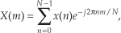
we’ll get a DFT output X(m) where m goes from 0 to N−1. (We’re assuming, of course, that the DFT is implemented by way of an FFT algorithm.) Using the superscript “*” symbol to represent the complex conjugate, we can extract the two desired FFT outputs Xa(m) and Xb(m) from X(m) by using the following:
and
Let’s break Eqs. (13-20) and (13-21) into their real and imaginary parts to get expressions for Xa(m) and Xb(m) that are easier to understand and implement. Using the notation showing X(m)’s real and imaginary parts, where X(m) = Xr(m) + jXi(m), we can rewrite Eq. (13-20) as
where m = 1, 2, 3, . . ., N−1. What about the first Xa(m), when m = 0? Well, this is where we run into a bind if we actually try to implement Eq. (13-20) directly. Letting m = 0 in Eq. (13-20), we quickly realize that the first term in the numerator, X*(N−0) = X*(N), isn’t available because the X(N) sample does not exist in the output of an N-point FFT! We resolve this problem by remembering that X(m) is periodic with a period N, so X(N) = X(0).† When m = 0, Eq. (13-20) becomes
† This fact is illustrated in Section 3.8 during the discussion of spectral leakage in DFTs.
Next, simplifying Eq. (13-21),
where, again, m = 1, 2, 3, . . ., N−1. By the same argument used for Eq. (13-23), when m = 0, Xb(0) in Eq. (13-24) becomes
This discussion brings up a good point for beginners to keep in mind. In the literature Eqs. (13-20) and (13-21) are often presented without any discussion of the m = 0 problem. So, whenever you’re grinding through an algebraic derivation or have some equations tossed out at you, be a little skeptical. Try the equations out on an example—see if they’re true. (After all, both authors and book typesetters are human and sometimes make mistakes. We had an old saying in Ohio for this situation: “Trust everybody, but cut the cards.”) Following this advice, let’s prove that this Two N-Point Real FFTs algorithm really does work by applying the 8-point data sequences from Chapter 3’s DFT examples to Eqs. (13-22) through (13-25). Taking the 8-point input data sequence from Section 3.1’s DFT Example 1 and denoting it a(n),
Taking the 8-point input data sequence from Section 3.6’s DFT Example 2 and calling it b(n),
Combining the sequences in Eqs. (13-26) and (13-27) into a single complex sequence x(n),
Now, taking the 8-point FFT of the complex sequence in Eq. (13-28), we get
So from Eq. (13-23),
Xa(0) = Xr(0) = 0.
To get the rest of Xa(m), we have to plug the FFT output’s X(m) and X(N−m) values into Eq. (13-22).† Doing so,
† Remember, when the FFT’s input is complex, the FFT outputs may not be conjugate symmetric; that is, we can’t assume that F(m) is equal to F*(N−m) when the FFT input sequence’s real and imaginary parts are both nonzero.
So Eq. (13-22) really does extract Xa(m) from the X(m) sequence in Eq. (13-29). We can see that we need not solve Eq. (13-22) when m is greater than 4 (or N/2) because Xa(m) will always be conjugate symmetric. Because Xa(7) = Xa(1), Xa(6) = Xa(2), etc., only the first N/2 elements in Xa(m) are independent and need be calculated.
OK, let’s keep going and use Eqs. (13-24) and (13-25) to extract Xb(m) from the FFT output. From Eq. (13-25),
Xb(0) = Xi(0) = 0.
Plugging the FFT’s output values into Eq. (13-24) to get the next four Xb(m)s, we have
The question arises “With the additional processing required by Eqs. (13-22) and (13-24) after the initial FFT, how much computational saving (or loss) is to be had by this Two N-Point Real FFTs algorithm?” We can estimate the efficiency of this algorithm by considering the number of arithmetic operations required relative to two separate N-point radix-2 FFTs. First, we estimate the number of arithmetic operations in two separate N-point complex FFTs.
From Section 4.6, we know that a standard radix-2 N-point complex FFT comprises (N/2) · log2N butterfly operations. If we use the optimized butterfly structure, each butterfly requires one complex multiplication and two complex additions. Now, one complex multiplication requires two real additions and four real multiplications, and one complex addition requires two real additions.† So a single FFT butterfly operation comprises four real multiplications and six real additions. This means that a single N-point complex FFT requires (4N/2) · log2N real multiplications, and (6N/2) · log2N real additions. Finally, we can say that two separate N-point complex radix-2 FFTs require
† The complex addition (a+jb) + (c+jd) = (a+c) + j(b+d) requires two real additions. A complex multiplication (a+jb) · (c+jd) = ac−bd + j(ad+bc) requires two real additions and four real multiplications.

Next, we need to determine the computational workload of the Two N-Point Real FFTs algorithm. If we add up the number of real multiplications and real additions required by the algorithm’s N-point complex FFT, plus those required by Eq. (13-22) to get Xa(m), and those required by Eq. (13-24) to get Xb(m), the Two N-Point Real FFTs algorithm requires

Equations (13-31) and (13-31′) assume that we’re calculating only the first N/2 independent elements of Xa(m) and Xb(m). The single N term in Eq. (13-31) accounts for the N/2 divide by 2 operations in Eq. (13-22) and the N/2 divide by 2 operations in Eq. (13-24).
OK, now we can find out how efficient the Two N-Point Real FFTs algorithm is compared to two separate complex N-point radix-2 FFTs. This comparison, however, depends on the hardware used for the calculations. If our arithmetic hardware takes many more clock cycles to perform a multiplication than an addition, then the difference between multiplications in Eqs. (13-30) and (13-31) is the most important comparison. In this case, the percentage gain in computational saving of the Two N-Point Real FFTs algorithm relative to two separate N-point complex FFTs is the difference in their necessary multiplications over the number of multiplications needed for two separate N-point complex FFTs, or
The computational (multiplications only) saving from Eq. (13-32) is plotted as the top curve of Figure 13-11. In terms of multiplications, for N≥32, the Two N-Point Real FFTs algorithm saves us over 45 percent in computational workload compared to two separate N-point complex FFTs.
Figure 13-11 Computational saving of the Two N-Point Real FFTs algorithm over that of two separate N-point complex FFTs. The top curve indicates the saving when only multiplications are considered. The bottom curve is the saving when both additions and multiplications are used in the comparison.
For hardware using high-speed multiplier integrated circuits, multiplication and addition can take roughly equivalent clock cycles. This makes addition operations just as important and time consuming as multiplications. Thus the difference between those combined arithmetic operations in Eqs. (13-30) plus (13-30′) and Eqs. (13-31) plus (13-31′) is the appropriate comparison. In this case, the percentage gain in computational saving of our algorithm over two FFTs is their total arithmetic operational difference over the total arithmetic operations in two separate N-point complex FFTs, or
The full computational (multiplications and additions) saving from Eq. (13-33) is plotted as the bottom curve of Figure 13-11. This concludes our discussion and illustration of how a single N-point complex FFT can be used to transform two separate N-point real input data sequences.
13.5.2 Performing a 2N-Point Real FFT
Similar to the scheme above where two separate N-point real data sequences are transformed using a single N-point FFT, a technique exists where a 2N-point real sequence can be transformed with a single complex N-point FFT. This 2N-Point Real FFT algorithm, whose derivation is also described in the literature, requires that the 2N-sample real input sequence be separated into two parts[19,20]—not broken in two, but unzipped—separating the even and odd sequence samples. The N even-indexed input samples are loaded into the real part of a complex N-point input sequence x(n). Likewise, the input’s N odd-indexed samples are loaded into x(n)’s imaginary parts. To illustrate this process, let’s say we have a 2N-sample real input data sequence a(n) where 0 ≤ n ≤ 2N−1. We want a(n)’s 2N-point transform Xa(m). Loading a(n)’s odd/even sequence values appropriately into an N-point complex FFT’s input sequence, x(n),
Applying the N complex values in Eq. (13-34) to an N-point complex FFT, we’ll get an FFT output X(m) = Xr(m) + jXi(m), where m goes from 0 to N−1. To extract the desired 2N-Point Real FFT algorithm output Xa(m) = Xa,real(m) + jXa,imag(m) from X(m), let’s define the following relationships:
For the reasons presented following Eq. (13-22) in the last section, in the above expressions recall that Xr(N) = Xr(0), and Xi(N) = Xi(0). The values resulting from Eqs. (13-35) through (13-38) are, then, used as factors in the following expressions to obtain the real and imaginary parts of our final Xa(m):
and
Remember, now, the original a(n) input index n goes from 0 to 2N−1, and our N-point FFT output index m goes from 0 to N−1. We apply 2N real input time-domain samples to this algorithm and get back N complex frequency-domain samples representing the first half of the equivalent 2N-point complex FFT, Xa(0) through Xa(N−1). Because this algorithm’s a(n) input is constrained to be real, Xa(N+1) through Xa(2N−1) are merely the complex conjugates of their Xa(1) through Xa(N−1) counterparts and need not be calculated.
The above process does not compute the Xa(N) sample. The Xa(N) sample, which is real-only, is
To help us keep all of this straight, Figure 13-12 depicts the computational steps of the 2N-Point Real FFT algorithm.
Figure 13-12 Computational flow of the 2N-Point Real FFT algorithm.
To demonstrate this process by way of example, let’s apply the 8-point data sequence from Eq. (13-26) to the 2N-Point Real FFT algorithm. Partitioning those Eq. (13-26), samples as dictated by Eq. (13-34), we have our new FFT input sequence:
With N = 4 in this example, taking the 4-point FFT of the complex sequence in Eq. (13-41), we get
Using these values, we now get the intermediate factors from Eqs. (13-35) through (13-38). Calculating our first Xr+(0) value, again we’re reminded that X(m) is periodic with a period N, so X(4) = X(0), and Xr+(0) = [Xr (0) + Xr (0)]/2 = 0. Continuing to use Eqs. (13-35) through (13-38),
Using the intermediate values from Eq. (13-43) in Eqs. (13-39) and (13-40),
Evaluating the sine and cosine terms in Eq. (13-44),
Combining the results of the terms in Eq. (13-45), we have our final correct answer of
After going through all the steps required by Eqs. (13-35) through (13-40), the reader might question the efficiency of this 2N-Point Real FFT algorithm. Using the same process as the above Two N-Point Real FFTs algorithm analysis, let’s show that the 2N-Point Real FFT algorithm does provide some modest computational saving. First, we know that a single 2N-point radix-2 FFT has (2N/2) · log22N = N · (log2N+1) butterflies and requires
and
If we add up the number of real multiplications and real additions required by the algorithm’s N-point complex FFT, plus those required by Eqs. (13-35) through (13-38) and those required by Eqs. (13-39) and (13-40), the complete 2N-Point Real FFT algorithm requires
and
OK, using the same hardware considerations (multiplications only) we used to arrive at Eq. (13-32), the percentage gain in multiplication saving of the 2N-Point Real FFT algorithm relative to a 2N-point complex FFT is
The computational (multiplications only) saving from Eq. (13-49) is plotted as the bottom curve of Figure 13-13. In terms of multiplications, the 2N-Point Real FFT algorithm provides a saving of >30 percent when N ≥ 128 or whenever we transform input data sequences whose lengths are ≥256.
Figure 13-13 Computational saving of the 2N-Point Real FFT algorithm over that of a single 2N-point complex FFT. The top curve is the saving when both additions and multiplications are used in the comparison. The bottom curve indicates the saving when only multiplications are considered.
Again, for hardware using high-speed multipliers, we consider both multiplication and addition operations. The difference between those combined arithmetic operations in Eqs. (13-47) plus (13-47′) and Eqs. (13-48) plus (13-48′) is the appropriate comparison. In this case, the percentage gain in computational saving of our algorithm is
The full computational (multiplications and additions) saving from Eq. (13-50) is plotted as a function of N in the top curve of Figure 13-13.
13.6 Computing the Inverse FFT Using the Forward FFT
There are many signal processing applications where the capability to perform the inverse FFT is necessary. This can be a problem if available hardware, or software routines, have only the capability to perform the forward FFT. Fortunately, there are two slick ways to perform the inverse FFT using the forward FFT algorithm.
13.6.1 Inverse FFT Method 1
The first inverse FFT calculation scheme is implemented following the processes shown in Figure 13-14.
Figure 13-14 Processing for first inverse FFT calculation method.
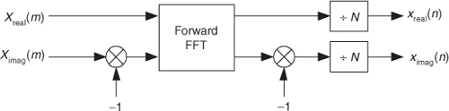
To see how this works, consider the expressions for the forward and inverse DFTs. They are

To reiterate our goal, we want to use the process in Eq. (13-51) to implement Eq. (13-52). The first step of our approach is to use complex conjugation. Remember, conjugation (represented by the superscript “*” symbol) is the reversal of the sign of a complex number’s imaginary exponent—if x = ejø, then x* = e−jø. So, as a first step we take the complex conjugate of both sides of Eq. (13-52) to give us

One of the properties of complex numbers, discussed in Appendix A, is that the conjugate of a product is equal to the product of the conjugates. That is, if c = ab, then c* = (ab)* = a*b*. Using this, we can show the conjugate of the right side of Eq. (13-53) to be
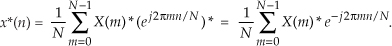
Hold on; we’re almost there. Notice the similarity of Eq. (13-54) to our original forward DFT expression, Eq. (13-51). If we perform a forward DFT on the conjugate of the X(m) in Eq. (13-54), and divide the results by N, we get the conjugate of our desired time samples x(n). Taking the conjugate of both sides of Eq. (13-54), we get a more straightforward expression for x(n):
13.6.2 Inverse FFT Method 2
The second inverse FFT calculation technique is implemented following the interesting data flow shown in Figure 13-15.
Figure 13-15 Processing for second inverse FFT calculation method.
In this clever inverse FFT scheme we don’t bother with conjugation. Instead, we merely swap the real and imaginary parts of sequences of complex data[21]. To see why this process works, let’s look at the inverse DFT equation again while separating the input X(m) term into its real and imaginary parts and remembering that ejø = cos(ø) + jsin(ø).
Multiplying the complex terms in Eq. (13-56) gives us
Equation (13-57) is the general expression for the inverse DFT, and we’ll now quickly show that the process in Figure 13-15 implements this equation. With X(m) = Xreal(m) + jXimag(m), then swapping these terms gives us
The forward DFT of our Xswap(m) is
Multiplying the complex terms in Eq. (13-59) gives us
Swapping the real and imaginary parts of the results of this forward DFT gives us what we’re after:
If we divided Eq. (13-61) by N, it would be exactly equal to the inverse DFT expression in Eq. (13-57), and that’s what we set out to show.
13.7 Simplified FIR Filter Structure
If we implement a linear-phase FIR digital filter using the standard structure in Figure 13-16(a), there’s a way to reduce the number of multipliers when the filter has an odd number of taps. Let’s look at the top of Figure 13-16(a) where the 5-tap FIR filter coefficients are h(0) through h(4) and the y(n) output is
Figure 13-16 Conventional and simplified structures of an FIR filter: (a) with an odd number of taps; (b) with an even number of taps.
If the FIR filter’s coefficients are symmetrical, we can reduce the number of necessary multipliers. That is, if h(4) = h(0), and h(3) = h(1), we can implement Eq. (13-62) by
where only three multiplications are necessary as shown at the bottom of Figure 13-16(a). In our 5-tap filter case, we’ve eliminated two multipliers. This minimum-multiplier structure is called a folded FIR filter.
So in the case of an odd number of taps, we need only perform (S−1)/2 + 1 multiplications for each filter output sample. For an even number of symmetrical taps as shown in Figure 13-16(b), the saving afforded by this technique reduces the necessary number of multiplications to S/2. Some commercial programmable DSP chips have specialized instructions, and dual multiply-and-accumulate (MAC) units, that take advantage of the folded FIR filter implementation.
13.8 Reducing A/D Converter Quantization Noise
In Section 12.3 we discussed the mathematical details, and ill effects, of quantization noise in analog-to-digital (A/D) converters. DSP practitioners commonly use two tricks to reduce converter quantization noise. Those schemes are called oversampling and dithering.
13.8.1 Oversampling
The process of oversampling to reduce A/D converter quantization noise is straightforward. We merely sample an analog signal at an fs sample rate higher than the minimum rate needed to satisfy the Nyquist criterion (twice the analog signal’s bandwidth), and then lowpass filter. What could be simpler? The theory behind oversampling is based on the assumption that an A/D converter’s total quantization noise power (variance) is the converter’s least significant bit (lsb) value squared over 12, or
We derived that expression in Section 12.3. The next assumptions are: The quantization noise values are truly random, and in the frequency domain the quantization noise has a flat spectrum. (These assumptions are valid if the A/D converter is being driven by an analog signal that covers most of the converter’s analog input voltage range and is not highly periodic.) Next we consider the notion of quantization noise power spectral density (PSD), a frequency-domain characterization of quantization noise measured in noise power per hertz as shown in Figure 13-17. Thus we can consider the idea that quantization noise can be represented as a certain amount of power (watts, if we wish) per unit bandwidth.
Figure 13-17 Frequency-domain power spectral density of an ideal A/D converter.
In our world of discrete systems, the flat noise spectrum assumption results in the total quantization noise (a fixed value based on the converter’s lsb voltage) being distributed equally in the frequency domain, from −fs/2 to +fs/2 as indicated in Figure 13-17. The amplitude of this quantization noise PSD is the rectangle area (total quantization noise power) divided by the rectangle width (fs), or
measured in watts/Hz.
The next question is: “How can we reduce the PSDnoise level defined by Eq. (13-65)?” We could reduce the lsb value (volts) in the numerator by using an A/D converter with additional bits. That would make the lsb value smaller and certainly reduce PSDnoise, but that’s an expensive solution. Extra converter bits cost money. Better yet, let’s increase the denominator of Eq. (13-65) by increasing the sample rate fs.
Consider a low-level discrete signal of interest whose spectrum is depicted in Figure 13-18(a). By increasing the fs,old sample rate to some larger value fs,new (oversampling), we spread the total noise power (a fixed value) over a wider frequency range as shown in Figure 13-18(b). The areas under the shaded curves in Figures 13-18(a) and 13-18(b) are equal. Next we lowpass filter the converter’s output samples. At the output of the filter, the quantization noise level contaminating our signal will be reduced from that at the input of the filter.
Figure 13-18 Oversampling example: (a) noise PSD at an fs,old samples rate; (b) noise PSD at the higher fs,new samples rate; (c) processing steps.
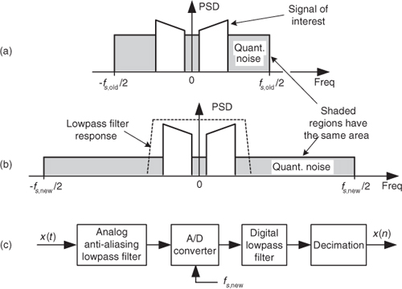
The improvement in signal-to-quantization-noise ratio, measured in dB, achieved by oversampling is
For example, if fs,old = 100 kHz, and fs,new = 400 kHz, the SNRA/D-gain = 10log10(4) = 6.02 dB. Thus oversampling by a factor of four (and filtering), we gain a single bit’s worth of quantization noise reduction. Consequently we can achieve N+1-bit performance from an N-bit A/D converter, because we gain signal amplitude resolution at the expense of higher sampling speed. After digital filtering, we can decimate to the lower fs,old without degrading the improved SNR. Of course, the number of bits used for the lowpass filter’s coefficients and registers must exceed the original number of A/D converter bits, or this oversampling scheme doesn’t work.
With the use of a digital lowpass filter, depending on the interfering analog noise in x(t), it’s possible to use a lower-performance (simpler) analog anti-aliasing filter relative to the analog filter necessary at the lower sampling rate.
13.8.2 Dithering
Dithering, another technique used to minimize the effects of A/D quantization noise, is the process of adding noise to our analog signal prior to A/D conversion. This scheme, which doesn’t seem at all like a good idea, can indeed be useful and is easily illustrated with an example. Consider digitizing the low-level analog sinusoid shown in Figure 13-19(a), whose peak voltage just exceeds a single A/D converter least significant bit (lsb) voltage level, yielding the converter output x1(n) samples in Figure 13-19(b). The x1(n) output sequence is clipped. This generates all sorts of spectral harmonics. Another way to explain the spectral harmonics is to recognize the periodicity of the quantization noise in Figure 13-19(c).
Figure 13-19 Dithering: (a) a low-level analog signal; (b) the A/D converter output sequence; (c) the quantization error in the converter’s output.
We show the spectrum of x1(n) in Figure 13-20(a) where the spurious quantization noise harmonics are apparent. It’s worthwhile to note that averaging multiple spectra will not enable us to pull some spectral component of interest up above those spurious harmonics in Figure 13-20(a). Because the quantization noise is highly correlated with our input sinewave—the quantization noise has the same time period as the input sinewave—spectral averaging will also raise the noise harmonic levels. Dithering to the rescue.
Figure 13-20 Spectra of a low-level discrete sinusoid: (a) with no dithering; (b) with dithering.

Dithering is the technique where random analog noise is added to the analog input sinusoid before it is digitized. This technique results in a noisy analog signal that crosses additional converter lsb boundaries and yields a quantization noise that’s much more random, with a reduced level of undesirable spectral harmonics as shown in Figure 13-20(b). Dithering raises the average spectral noise floor but increases our signal-to-noise ratio SNR2. Dithering forces the quantization noise to lose its coherence with the original input signal, and we could then perform signal averaging if desired.
Dithering is indeed useful when we’re digitizing
• low-amplitude analog signals,
• highly periodic analog signals (like a sinewave with an even number of cycles in the sample time interval), and
• slowly varying (very low frequency, including DC) analog signals.
The standard implementation of dithering is shown in Figure 13-21(a). The typical amount of random wideband analog noise used in this process, provided by a noise diode or noise generator ICs, has an rms (root mean squared) level equivalent to 1/3 to 1 lsb voltage level. The system-level effect of adding the analog dithering signal is to linearize the undithered stair-step transfer function of an A/D converter as shown in Figure 13-21(c).
Figure 13-21 Dithering implementations: (a) standard dithering process; (b) advanced dithering with noise subtraction; (c) improved transfer function due to dithering.
For high-performance audio applications, engineers have found that adding dither noise from two separate noise generators improves background audio low-level noise suppression. The probability density function (PDF) of the sum of two noise sources (having rectangular PDFs) is the convolution of their individual PDFs. Because the convolution of two rectangular functions is triangular, this dual-noise-source dithering scheme is called triangular dither. Typical triangular dither noise has rms levels equivalent to, roughly, 2 lsb voltage levels.
In the situation where our signal of interest occupies some well-defined portion of the full frequency band, injecting narrowband dither noise having an rms level equivalent to 4 to 6 lsb voltage levels, whose spectral energy is outside that signal band, would be advantageous. (Remember, though: the dither signal can’t be too narrowband, like a sinewave. Quantization noise from a sinewave signal would generate more spurious harmonics!) That narrowband dither noise can then be removed by follow-on digital filtering.
One last note about dithering: To improve our ability to detect low-level signals, we could add the analog dither noise and then subtract that noise from the digitized data, as shown in Figure 13-21(b). This way, we randomize the quantization noise but reduce the amount of total noise power injected in the analog signal. This scheme is used in commercial analog test equipment[22,23].
13.9 A/D Converter Testing Techniques
We can take advantage of digital signal processing techniques to facilitate the testing of A/D converters. In this section we present two schemes for measuring converter performance: first, a technique using the FFT to estimate overall converter noise, and second, a histogram analysis scheme to detect missing converter output codes.
13.9.1 Estimating A/D Quantization Noise with the FFT
The combination of A/D converter quantization noise, missing bits, harmonic distortion, and other nonlinearities can be characterized by analyzing the spectral content of the converter’s output. Converter performance degradation caused by these nonlinearities is not difficult to recognize because they show up as spurious spectral components and increased background noise levels in the A/D converter’s output samples. The traditional test method involves applying a sinusoidal analog voltage to an A/D converter’s input and examining the spectrum of the converter’s digitized time-domain output samples. We can use the FFT to compute the spectrum of an A/D converter’s output samples, but we have to minimize FFT spectral leakage to improve the sensitivity of our spectral measurements. Traditional time-domain windowing, however, often provides insufficient FFT leakage reduction for high-performance A/D converter testing.
The trick to circumvent this FFT leakage problem is to use a sinusoidal analog input voltage whose frequency is a rational factor of the A/D converter’s clock frequency as shown in Figure 13-22(a). That frequency is mfs/N where m is an integer, fs is the clock frequency (sample rate), and N is the FFT size. Figure 13-22(a) shows the x(n) time-domain output of an ideal 5-bit A/D converter when its analog input is a sinewave having exactly m = 4 cycles over N = 64 converter output samples. In this case, the analog input frequency is 4fs/64 Hz. Recall from Chapter 3 that the expression mfs/N defined the analysis frequencies, or bin centers, of the DFT, and a DFT input sinusoid whose frequency is at a bin center causes no spectral leakage.
Figure 13-22 A/D converter (5-bit) output with an analog 4fs/64 Hz sinewave input: (a) m = 4-cycle sinusoidal time samples; (b) spectral magnitude in dB.
The magnitudes of the first half of an N = 64-point FFT of x(n) are shown in the logarithmic plot in Figure 13-22(b) where the analog input spectral component lies exactly at the m = 4 bin center. (The additional nonzero spectral samples are not due to FFT leakage; they represent A/D converter quantization noise.) Specifically, if the sample rate were 1 MHz, then the A/D’s input analog sinewave’s frequency is 4(106/64) = 62.5 kHz. In order to implement this A/D testing scheme we must ensure that the analog test-signal generator is synchronized, exactly, with the A/D converter’s clock frequency of fs Hz. Achieving this synchronization is why this A/D converter testing procedure is referred to as coherent sampling[24–26]. That is, the analog signal generator and the A/D clock generator providing fs must not drift in frequency relative to each other—they must remain coherent. (Here we must take care from a semantic viewpoint because the quadrature sampling schemes described in Chapter 8 are also sometimes called coherent sampling, and they are unrelated to this A/D converter testing procedure.)
As it turns out, some values of m are more advantageous than others. Notice in Figure 13-22(a), that when m = 4, only ten different binary output values, output codes, are output by the A/D converter. Those values are repeated over and over, and the quantization noise is far from being random. As shown in Figure 13-23(a), when m = 5, we exercise more than ten different A/D output codes, and the quantization noise in Figure 13-23(b) is much more random than when m = 4.
Figure 13-23 A/D converter (5-bit) output with an analog 5fs/64 Hz sinewave input: (a) m = 5-cycle time samples; (b) spectral magnitude in dB; (c) FFT results interpretation.
Because it’s best to test as many A/D output codes as possible, while keeping the quantization noise sufficiently random, users of this A/D testing scheme have discovered another trick; they found making m an odd prime number (3, 5, 7, 11, etc.) minimizes the number of redundant A/D output code values and makes the quantization noise more random, which is what we want. The larger m is, the more codes that are exercised. (We can use histogram testing, discussed in the next section, to determine how many of a b-bit A/D converter’s 2b possible output codes have been exercised.)
While examining the quantization noise level in Figure 13-23(b), we might be tempted to say the A/D converter has a signal-to-quantization-noise ratio of 40 to 50 dB. As it turns out, the true A/D converter noise levels will be higher than those indicated by Figure 13-23(b). That’s because the inherent processing gain of the FFT (discussed in Section 3.12.1) will pull the high-level m = 5 signal spectral component up out of the background converter noise, making that m = 5 spectral magnitude sample appear higher above the background noise than is correct. Consequently, when viewing Figure 13-23(b), we must keep in mind an N = 64-point FFT’s processing gain of 10log10(64/2). Our interpretation of A/D performance based on the FFT magnitude results is given in Figure 13-23(c).
There is a technique used to characterize an A/D converter’s true signal-to-noise ratio (including quantization noise, harmonic distortion, and other nonlinearities). That testing technique measures what is commonly called an A/D converter’s SINAD—for signal-to-noise-and-distortion—and does not require us to consider FFT processing gain. The SINAD value for an A/D converter, based on spectral power samples, is
The SINAD value for an A/D converter is a good quantitative indicator of a converter’s overall dynamic performance. The steps to compute SINAD are:
1. Compute an N-point FFT of an A/D converter’s output sequence. Discard the negative-frequency samples of the FFT results.
2. Over the positive-frequency range of the FFT results, compute the total signal spectral power by summing the squares of all signal-only spectral magnitude samples. For our Figure 13-23 example that’s simply squaring the FFT’s |X(5)| magnitude value. (We square the linear |X(5)| value and not the value of |X(5)| in dB!)
3. Over the positive-frequency range of the FFT results, sum the squares of all noise-only spectral magnitude samples, including any signal harmonics, but excluding the zero-Hz X(0) sample. This summation result represents total noise power, which includes harmonic distortion.
4. Perform the computation given in Eq. (13-66′).
Performing those steps on the spectrum in Figure 13-23(b) yields a SINAD value of 31.6 dB. This result is reasonable for our simulated 5-bit A/D converter because its signal-to-quantization-noise ratio would ideally be 6·5 + 1.7 = 31.7 dB.
Figure 13-24(a) illustrates an extreme example of nonlinear A/D converter operation with several binary output codes (words) having dropped bits in the time-domain x(n) sequence with m = 5. The FFT magnitudes, provided in Figure 13-24(b), indicate severe A/D converter nonlinear distortion because we can see the increased background noise level compared to Figure 13-23(b). Performing Eq. (13-66′) for this noisy A/D gives us a measured SINAD value of 15.2 dB, which is drastically smaller than the ideal 5-bit A/D converter’s SINAD = 31.6 dB. The point here is that we can quickly measure an A/D converter’s performance using FFTs and Eq. (13-66′).
Figure 13-24 Nonideal A/D converter output showing several dropped bits: (a) time samples; (b) spectral magnitude in dB.
To fully characterize the dynamic performance of an A/D converter we’d need to perform this SINAD testing technique at many different input frequencies and amplitudes. (The analog sinewave applied to an A/D converter must, of course, be as pure as possible. Any distortion inherent in the analog signal will show up in the final FFT output and could be mistaken for A/D nonlinearity.) The key issue here is that when any input frequency is mfs/N, where m is less than N/2 to satisfy the Nyquist sampling criterion, we can take full advantage of the FFT’s processing capability while minimizing spectral leakage.
For completeness, we mention that what we called SINAD in Eq. (13-66′) is sometimes called SNDR. In addition, there is a measurement scheme called SINAD used by RF engineers to quantify the sensitivity of radio receivers. That receiver SINAD concept is quite different from our Eq. (13-66′) A/D converter SINAD estimation process and will not be discussed here.
13.9.2 Estimating A/D Dynamic Range
In this section we describe a technique of applying the sum of two analog sinewaves to an A/D converter’s input to quantify the intermodulation distortion performance of a converter, which in turn measures the converter’s dynamic range. That dynamic range is called the converter’s spurious free dynamic range (SFDR). In this testing scheme both input sinewaves must comply with the mfs/N restriction. Figure 13-25(a) shows the test configuration.
Figure 13-25 A/D converter SFDR testing: (a) hardware test configuration; (b) example test results.
The SFDR test starts by applying the sum of two equal-amplitude analog sinewaves to an A/D converter and monitoring the spectrum of the converter’s output samples. Next we increase both analog sinewaves’ amplitudes until we see a spurious spectral component rising above the converter’s background spectral noise as shown in Figure 13-25(b). Finally we measure the converter’s SFDR as the dB difference between a high-level signal spectral magnitude sample and the spurious signal’s spectral magnitude.
For this SFDR testing it’s prudent to use bandpass filters (BPFs) to improve the spectral purity of the sinewave generators’ outputs, and small-valued fixed attenuators (pads) are used to keep the generators from adversely interacting with each other. (I recommend 3 dB fixed attenuators for this.) The power combiner is typically an analog power splitter driven backward, and the A/D clock generator output is a squarewave. The dashed lines in Figure 13-25(a) indicate that all three generators are synchronized to the same reference frequency source.
13.9.3 Detecting Missing Codes
One problem that can plague A/D converters is missing codes. This defect occurs when a converter is incapable of outputting a specific binary word (a code). Think about driving an eight-bit converter with an analog sinusoid and the effect when its output should be the binary word 00100001 (decimal 33); its output is actually the word 00100000 (decimal 32) as shown in Figure 13-26(a). The binary word representing decimal 33 is a missing code. This subtle nonlinearity is very difficult to detect by examining time-domain samples or performing spectrum analysis. Fortunately there is a simple, reliable way to detect the missing 33 using histogram analysis.
Figure 13-26 Eight-bit converter missing codes: (a) missing code of binary 00100001, decimal 33; (b) histogram plot.
The histogram testing technique merely involves collecting many A/D converter output samples and plotting the number of occurrences of each sample value versus that sample value as shown in Figure 13-26(b). Any missing code (like our missing 33) would show up in the histogram as a zero value. That is, there were zero occurrences of the binary code representing a decimal 33.
Additional useful information can be obtained from our histogram results. That is, counting the number of nonzero samples in Figure 13-26(b) tells us how many actual different A/D converter output codes (out of a possible 2b codes) have been exercised.
In practice, the input analog sinewave must have an amplitude that’s somewhat greater than the analog signal that we intend to digitize in an actual application, and a frequency that is unrelated to (incoherent with) the fs sampling rate. In an effort to exercise (test) all of the converter’s output codes, we digitize as many cycles of the input sinewave as possible for our histogram test.
13.10 Fast FIR Filtering Using the FFT
In the late 1960s, while contemplating the notion of time-domain convolution, DSP pioneer Thomas Stockham (digital audio expert and inventor of the compact disc) realized that time-domain convolution could sometimes be performed much more efficiently using fast Fourier transform (FFT) algorithms rather than using the direct convolution implemented with tapped-delay line FIR filters. The principle behind this FFT-based convolution scheme, called fast convolution (also called block convolution or FFT convolution), is diagrammed in Figure 13-27(a). In that figure x(n) is an input signal sequence and h(k) is the Q-length impulse response (coefficients) of a tapped-delay line FIR filter. Figure 13-27(a) is a graphical depiction of one form of the convolution theorem: Multiplication in the frequency domain is equivalent to convolution in the time domain.
Figure 13-27 Fast convolution: (a) basic process; (b) computational workloads for various FIR filter tap lengths Q.
The standard convolution equation, for a Q-tap FIR filter, given in Eq. (5-6) is repeated here for reference as
where the symbol “*” means convolution. When the filter’s h(k) impulse response has a length greater than 40 to 80 (depending on the hardware and software being used), the process in Figure 13-27(a) requires fewer computations than directly implementing the convolution expression in Eq. (13-67). Consequently, this fast convolution technique is a computationally efficient signal processing tool, particularly when used for digital filtering. Fast convolution’s gain in computational efficiency becomes quite significant when the lengths of h(k) and x(n) are large.
Figure 13-27(b) indicates the reduction in the fast convolution algorithm’s computational workload relative to the standard (tapped-delay line) time-domain convolution method, Eq. (13-67), versus the length of the x(n) sequence for various filter impulse response lengths Q. (Please do not view Figure 13-27(b) as any sort of gospel truth. That figure is merely an indicator of fast convolution’s computational efficiency.)
The necessary forward and inverse FFT sizes, N, in Figure 13-27(a) must of course be equal and are dependent upon the length of the original h(k) and x(n) sequences. Recall from Eq. (5-29) that if h(k) is of length Q and x(n) is of length P, the length of the final y(n) sequence will be L where
For this fast convolution technique to yield valid results, the forward and inverse FFT sizes must be equal to or greater than L. So, to implement fast convolution we must choose an N-point FFT size such that N ≥ L, and zero-pad h(k) and x(n) so they have new lengths equal to N. The desired y(n) output is the real part of the first L samples of the inverse FFT. Note that the H(m) sequence, the FFT of the FIR filter’s h(k) impulse response, need only be computed once and stored in memory.
Now if the x(n) input sequence length P is so large that FFT processing becomes impractical, or your hardware memory buffer can only hold small segments of the x(n) time samples, then x(n) must be partitioned into multiple blocks of samples and each sample block processed individually. If the partitioned-x(n) block lengths are N, a straightforward implementation of Figure 13-27(a) leads to time-domain aliasing errors in y(n) due to the circular nature (spectral wraparound) of the discrete Fourier transform (and the FFT). Two techniques are used to avoid that time-domain aliasing problem, the overlap-and-save method and the overlap-and-add method. Of these two methods, let’s first have a look at the overlap-and-save fast convolution filtering technique shown in Figure 13-28(a).
Figure 13-28 Fast convolution block processing (continues).
Given that the desired FIR filter’s h(k) impulse response length is Q and the x(n) filter input sequence is of length P, the steps to perform overlap-and-save fast convolution filtering are as follows:
1. Choose an FFT size of N, where N is an integer power of two equal to roughly four times Q.
2. Append (N−Q) zero-valued samples to the end of the h(k) impulse response and perform an N-point FFT on the extended sequence, producing the complex H(m) sequence.
3. Compute integer M using M = N−(Q−1).
4. Insert (Q−1) zero-valued samples prior to the first M samples of x(n), creating the first N-point FFT input sequence x1(n).
5. Perform an N-point FFT on x1(n), multiply that FFT result by the H(m) sequence, and perform an N-point inverse FFT on the product. Discard the first (Q−1) samples of the inverse FFT results to generate the first M-point output block of data y1(n).
6. Attach the last (Q−1) samples of x1(n) to the beginning of the second M-length block of the original x(n) sequence, creating the second N-point FFT input sequence x2(n) as shown in Figure 13-28(a).
7. Perform an N-point FFT on x2(n), multiply that FFT result by the H(m) sequence, and perform an N-point inverse FFT on the product. Discard the first (Q−1) samples of the inverse FFT results to generate the second M-point output block of data y2(n).
8. Repeat Steps 6 and 7 until we have gone through the entire original x(n) filter input sequence. Depending on the length P of the original x(n) input sequence and the chosen value for N, we must append anywhere from Q−1 to N−1 zero-valued samples to the end of the original x(n) input samples in order to accommodate the final block of forward and inverse FFT processing.
9. Concatenate the y1(n), y2(n), y3(n), . . . sequences shown in Figure 13-28(a), discarding any unnecessary trailing zero-valued samples, to generate your final linear-convolution filter output y(n) sequence.
10. Finally, experiment with different values of N to see if there exists an optimum N that minimizes the computational workload for your hardware and software implementation. In any case, N must not be less than (M+Q−1). (Smaller N means many small-sized FFTs are needed, and large N means fewer, but larger-sized, FFTs are necessary. Pick your poison.)
The second fast convolution method, the overlap-and-add technique, is shown in Figure 13-28(b). In this method, the x(n) input sequence is partitioned (segmented) into data blocks of length M, and our data overlapping takes place in the inverse FFT time-domain sequences. Given that the desired FIR filter’s h(k) impulse response length is Q and the x(n) filter input sequence is of length P, the steps to perform overlap-and-add fast convolution filtering are as follows:
1. Choose an FFT size of N, where N is an integer power of two equal to roughly two times Q.
2. Append (N−Q) zero-valued samples to the end of the h(k) impulse response and perform an N-point FFT on the extended sequence, producing the complex H(m) sequence.
3. Compute integer M using M = N−(Q−1).
4. Append (Q−1) zero-valued samples to the end of the first M samples, x1(n), of the original x(n) sequence, creating the first N-point FFT input sequence.
5. Perform an N-point FFT on the first N-point FFT input sequence, multiply that FFT result by the H(m) sequence, and perform an N-point inverse FFT on the product. Retain the first M samples of the inverse FFT sequence, generating the first M-point output block of data y1(n).
6. Append (Q−1) zero-valued samples to the end of the second M samples, x2(n), of the original x(n) sequence, creating the second N-point FFT input sequence.
7. Perform an N-point FFT on the second N-point FFT input sequence, multiply that FFT result by the H(m) sequence, and perform an N-point inverse FFT on the product. Add the last (Q−1) samples from the previous inverse FFT to the first (Q−1) samples of the current inverse FFT sequence. Retain the first M samples of the sequence resulting from the (Q−1)-element addition process, generating the second M-point output block of data y2(n).
8. Repeat Steps 6 and 7 until we have gone through the entire original x(n) filter input sequence. Depending on the length P of the original x(n) input sequence and the chosen value for N, we must append anywhere from Q−1 to N−1 zero-valued samples to the end of the original x(n) input samples in order to accommodate the final block of forward and inverse FFT processing.
9. Concatenate the y1(n), y2(n), y3(n), . . . sequences shown in Figure 13-28(b), discarding any unnecessary trailing zero-valued samples, to generate your final linear-convolution filter output y(n) sequence.
10. Finally, experiment with different values of N to see if there exists an optimum N that minimizes the computational workload for your hardware and software implementation. N must not be less than (M+Q−1). (Again, smaller N means many small-sized FFTs are needed, and large N means fewer, but larger-sized, FFTs are necessary.)
It’s useful to realize that the computational workload of these fast convolution filtering schemes does not change as Q increases in length up to a value of N. Another interesting aspect of fast convolution, from a hardware standpoint, is that the FFT indexing bit-reversal problem discussed in Sections 4.5 and 4.6 is not an issue here. If the FFTs result in X(m) and H(m) having bit-reversed output sample indices, the multiplication can still be performed directly on the scrambled H(m) and X(m) sequences. Then an appropriate inverse FFT structure can be used that expects bit-reversed input data. That inverse FFT then provides an output sequence whose time-domain indexing is in the correct order. Neat!
By the way, it’s worth knowing that there are no restrictions on the filter’s finite-length h(k) impulse response—h(k) is not limited to being real-valued and symmetrical as is traditional with tapped-delay line FIR filters. Sequence h(k) can be complex-valued, asymmetrical (to achieve nonlinear-phase filtering), or whatever you choose.
One last issue to bear in mind: the complex amplitudes of the standard radix-2 FFT’s output samples are proportional to the FFT sizes, N, so the product of two FFT outputs will have a gain proportional to N2. The inverse FFT has a normalizing gain reduction of only 1/N. As such, our fast convolution filtering methods will have an overall gain that is not unity. We suggest that practitioners give this gain normalization topic some thought during the design of their fast convolution system.
To summarize this frequency-domain filtering discussion, the two fast convolution filtering schemes can be computationally efficient, compared to standard tapped-delay line FIR convolution filtering, particularly when the x(n) input sequence is large and high-performance filtering is needed (requiring many filter taps, i.e., Q = 40 to 80). As for which method, overlap-and-save or overlap-and-add, should be used in any given situation, there is no simple answer. Choosing a fast convolution method depends on many factors: the fixed/floating-point arithmetic used, memory size and access latency, computational hardware architecture, and specialized built-in filtering instructions, etc.
13.11 Generating Normally Distributed Random Data
Section D.7 in Appendix D discusses the normal distribution curve as it relates to random data. A problem we may encounter is how actually to generate random data samples whose distribution follows that normal (Gaussian) curve. There’s a straightforward way to solve this problem using any software package that can generate uniformly distributed random data, as most of them do[27]. Figure 13-29 shows our situation pictorially where we require random data that’s distributed normally with a mean (average) of μ′ and a standard deviation of σ′, as in Figure 13-29(a), and all we have available is a software routine that generates random data that’s uniformly distributed between zero and one as in Figure 13-29(b).
Figure 13-29 Probability distribution functions: (a) normal distribution with mean = μ′ and standard deviation σ′; (b) uniform distribution between zero and one.
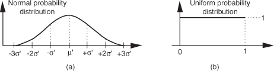
As it turns out, there’s a principle in advanced probability theory, known as the Central Limit Theorem, that says when random data from an arbitrary distribution is summed over M samples, the probability distribution of the sum begins to approach a normal distribution as M increases[28–30]. In other words, if we generate a set of N random samples that are uniformly distributed between zero and one, we can begin adding other sets of N samples to the first set. As we continue summing additional sets, the distribution of the N-element set of sums becomes more and more normal. We can sound impressive and state that “the sum becomes asymptotically normal.” Experience has shown that for practical purposes, if we sum M ≥ 30 times, the summed data distribution is essentially normal. With this rule in mind, we’re halfway to solving our problem.
After summing M sets of uniformly distributed samples, the summed set ysum will have a distribution as shown in Figure 13-30.
Figure 13-30 Probability distribution of the summed set of random data derived from uniformly distributed data.
Because we’ve summed M data sets whose mean values were all 0.5, the mean of ysum is the sum of those M means, or μ = M/2. From Section D.6 of Appendix D we know the variance of a single data sample set, having the probability distribution in Figure 13-29(b), is 1/12. Because the variance of the sum of M data sets is equal to the sum of their individual variances, we can say
and
So, here’s the trick: To convert the ysum data set to our desired data set having a mean of μ′ and a standard deviation of σ′, we
1. subtract M/2 from each element of ysum to shift its mean to zero;
2. scale ysum so that its standard deviation is the desired σ′, by multiplying each sample in the shifted data set by σ′/σ; and
3. finally, center the new data set at the desired μ′ value by adding μ′ to each sample of the scaled data set.
If we call our desired normally distributed random data set ydesired, then the nth element of that set is described mathematically as
Our discussion thus far has had a decidedly software algorithm flavor, but hardware designers also occasionally need to generate normally distributed random data at high speeds in their designs. For you hardware designers, reference [30] presents an efficient hardware design technique to generate normally distributed random data using fixed-point arithmetic integrated circuits.
The above method for generating normally distributed random numbers works reasonably well, but its results are not perfect because the tails of the probability distribution curve in Figure 13-30 are not perfectly Gaussian.† An advanced, and more statistically correct (improved randomness), technique that you may want to explore is called the Ziggurat method[31–33].
† I thank my DSP pal Dr. Peter Kootsookos, of UTC Fire and Security, Farmington, Connecticut, for his advice on this issue.
13.12 Zero-Phase Filtering
You can cancel the nonlinear phase effects of an IIR filter by following the process shown in Figure 13-31(a). The y(n) output will be a filtered version of x(n) with no filter-induced phase distortion. The same IIR filter is used twice in this scheme, and the time reversal step is a straight left-right flipping of a time-domain sequence. Consider the following. If some spectral component in x(n) has an arbitrary phase of α degrees, and the first filter induces a phase shift of −β degrees, that spectral component’s phase at node A will be α−β degrees. The first time reversal step will conjugate that phase and induce an additional phase shift of −θ degrees. (Appendix C explains this effect.) Consequently, the component’s phase at node B will be −α+β−θ degrees. The second filter’s phase shift of −β degrees yields a phase of −α−θ degrees at node C. The final time reversal step (often omitted in literary descriptions of this zero-phase filtering process) will conjugate that phase and again induce an additional phase shift of −θ degrees. Thankfully, the spectral component’s phase in y(n) will be α+θ−θ = α degrees, the same phase as in x(n). This property yields an overall filter whose phase response is zero degrees over the entire frequency range.
Figure 13-31 Two equivalent zero-phase filtering techniques.
An equivalent zero-phase filter is presented in Figure 13-31(b). Of course, these methods of zero-phase filtering cannot be performed in real time because we can’t reverse the flow of time (at least not in our universe). This filtering is a block processing, or off-line, process, such as filtering an audio file stored in a computer. We must have all the time samples available before we start processing. The initial time reversal in Figure 13-31(b) illustrates this restriction.
There will be filter transient effects at the beginning and end of the filtered sequences. If transient effects are bothersome in a given application, consider discarding L samples from the beginning and end of the final y(n) time sequence, where L is four (or five) times the order of the IIR filter.
By the way, the final peak-to-peak passband ripple (in dB) of this zero-phase filtering process will be twice the peak-to-peak passband ripple of the single IIR filter. The final stopband attenuation will also be double that of the single filter.
13.13 Sharpened FIR Filters
Here’s an interesting technique for improving the stopband attenuation of a digital filter under the condition that we’re unable, for whatever reason, to modify that filter’s coefficients. Actually, we can double a filter’s stopband attenuation by cascading the filter with itself. This works, as shown in Figure 13-32(a), where the frequency magnitude response of a single filter is a dashed curve |H(m)| and the response of the filter cascaded with itself is represented by the solid curve |H2(m)|. The problem with this simple cascade idea is that it also doubles the passband peak-to-peak ripple as shown in Figure 13-32(b). The frequency axis in Figure 13-32 is normalized such that a value of 0.5 represents half the signal sample rate.
Figure 13-32 Frequency magnitude responses of a single filter and that filter cascaded with itself: (a) full response; (b) passband detail.
Well, there’s a better scheme for improving the stopband attenuation performance of a filter and avoiding passband ripple degradation without actually changing the filter’s coefficients. The technique is called filter sharpening[34] and is shown as Hs in Figure 13-33.
Figure 13-33 Filter sharpening process.
The delay element in Figure 13-33 is equal to (N−1)/2 samples where N is the number of h(k) coefficients, the unit-impulse response length, in the original H(m) FIR filter. Using the sharpening process results in the improved |Hs(m)| filter performance shown as the solid curve in Figure 13-34, where we see the increased stopband attenuation and reduced passband ripple beyond that afforded by the original H(m) filter. Because of the delayed time-alignment constraint, filter sharpening is not applicable to filters having non-constant group delay, such as minimum-phase FIR filters or IIR filters.
Figure 13-34 |H(m)| and |Hs(m)| performance: (a) full frequency response; (b) passband detail.
If need be, we can eliminate the multipliers shown in Figure 13-33. The multiply by two operation can be implemented with an arithmetic left shift by one binary bit. The multiply by three operation can be implemented by adding the Delay output sample to a shifted-left-by-one-bit version of itself.
Be aware that the gain factors in Figure 13-33 are based on the assumption that the original h(k) filter to be sharpened has a passband gain of one. If the h(k) filter has a non-unity passband gain of G ≠ 1, then the network in Figure 13-35(a) should be used, where the alternate constant gain factors provide optimum filter sharpening. On the other hand, the Figure 13-35(a) gain factors can be modified to some extent if doing so simplifies the filter implementation. For example, if 2/G2 = 1.7, for ease of implementation, the practitioner should try using a factor of 2 in place of the factor 1.7. Using a gain factor of 2 will not be optimum but it may well be acceptable, depending on the characteristics of the filter to be sharpened. Software modeling will resolve this issue.
Figure 13-35 Non-unity gain filter sharpening: (a) low-order sharpening; (b) higher-order sharpening for increased stopband attenuation.
If additional stopband attenuation is needed, then the process shown in Figure 13-35(b) can be used, where again the Delay element is equal to (N-1)/2 unit delays.
In real-time applications, the filter sharpening networks we presented are straightforward and applicable to linear-phase lowpass, bandpass, and highpass FIR filters, just so long as the original filter’s H(f) has an integer group delay. (That restriction is necessary because the number of unit delays of the Delay element, needed for time synchronization in real-time systems, in the parallel path must be an integer.) This sharpening procedure is particularly useful if the original filter hardware is constrained to have some fixed number of bits to represent its coefficients. If an FIR filter’s coefficient bit width is b bits, the filter sharpening process in Figure 13-33 can, luckily for us, achieve the performance of filters having (b + 4)-bit coefficients. So, if our hardware forces us to use, say, 8-bit coefficients, we can achieve roughly 12-bit-coefficient filter performance.
Filter sharpening can be used whenever a given filter response cannot be modified, such as an unchangeable software subroutine, and can even be applied to cascaded integrator-comb (CIC) filters to flatten their passband responses, as well as FIR fixed-point multiplierless filters where the coefficients are constrained to be powers of two[35,36].
As a historical aside, filter sharpening is a process refined and expanded by the accomplished R. Hamming (of Hamming window fame) based on an idea originally proposed by the great American mathematician John Tukey, the inventor of the radix-2 fast Fourier transform (FFT).
13.14 Interpolating a Bandpass Signal
There are many digital communications applications where a real signal is centered at one-fourth the sample rate, or fs/4. This condition makes quadrature down-conversion particularly simple. (See Sections 8.9 and 13.1.) In the event that you’d like to generate an interpolated (increased sample rate) version of the bandpass signal but maintain its fs/4 center frequency, there’s an efficient way to do so[37]. Suppose we want to interpolate by a factor of two so the output sample rate is twice the input sample rate, fs-out = 2fs-in. In this case the process is: quadrature down-conversion by fs-in/4, interpolation factor of two, quadrature up-conversion by fs-out/4, and then take only the real part of the complex upconverted sequence. The implementation of this scheme is shown at the top of Figure 13-36.
Figure 13-36 Bandpass signal interpolation scheme, and spectra.
The sequences applied to the first multiplier in the top signal path are the real x(n) input and the repeating mixing sequence 1,0,−1,0. That mixing sequence is the real (or in-phase) part of the complex exponential
needed for quadrature down-conversion by fs/4. Likewise, the repeating mixing sequence 0,−1,0,1 applied to the first multiplier in the bottom path is the imaginary (or quadrature phase) part of the complex down-conversion exponential e−j2π(fs-in/4)ts-in. The “↑2” symbol means insert one zero-valued sample between each sample at the A nodes. The final subtraction to obtain y(n) is how we extract the real part of the complex sequence at Node D. (That is, we’re extracting the real part of the product of the complex signal at Node C times ej2π(1/4).) The spectra at various nodes of this process are shown at the bottom of Figure 13-35. The shaded spectra indicate true spectral components, while the white spectra represent spectral replications. Of course, the same lowpass filter must be used in both processing paths to maintain the proper time delay and orthogonal phase relationships.
There are several additional issues worth considering regarding this interpolation process[38]. If the amplitude loss, inherent in interpolation, of a factor of two is bothersome, we can make the final mixing sequences 2,0,−2,0 and 0,2,0,−2 to compensate for that loss. Because there are so many zeros in the sequences at Node B (three-fourths of the samples), we should consider those efficient polyphase filters for the lowpass filtering. Finally, if it’s sensible in your implementation, consider replacing the final adder with a multiplexer (because alternate samples of the sequences at Node D are zeros). In this case, the mixing sequence in the bottom path would be changed to 0,−1,0,1.
13.15 Spectral Peak Location Algorithm
In the practical world of discrete spectrum analysis, we often want to estimate the frequency of a sinusoid (or the center frequency of a very narrowband signal of interest). Upon applying the radix-2 fast Fourier transform (FFT), our narrowband signals of interest rarely reside exactly on an FFT bin center whose frequency is exactly known. As such, due to the FFT’s leakage properties, the discrete spectrum of a sinusoid having N time-domain samples may look like the magnitude samples shown in Figure 13-37(a). There we see the sinusoid’s spectral peak residing between the FFT’s m = 5 and m = 6 bin centers. (Variable m is an N-point FFT’s frequency-domain index. The FFT bin spacing is fs/N where, as always, fs is the sample rate.) Close examination of Figure 13-37(a) allows us to say the sinusoid lies in the range of m = 5 and m = 5.5, because we see that the maximum spectral sample is closer to the m = 5 bin center than the m = 6 bin center. The real-valued sinusoidal time signal has, in this example, a frequency of 5.25fs/N Hz. In this situation, our frequency estimation resolution is half the FFT bin spacing. We often need better frequency estimation resolution, and there are indeed several ways to improve that resolution.
Figure 13-37 Spectral magnitudes: (a) N-point FFT; (b) 4N-point FFT.
We could collect, say, 4N time-domain signal samples and perform a 4N-point FFT, yielding a reduced bin spacing of fs/4N. Or we could pad (append to the end of the original time samples) the original N time samples with 3N zero-valued samples and perform a 4N-point FFT on the lengthened time sequence. That would also provide an improved spectral peak estimation granularity of fs/4N, as shown in Figure 13-37(b). With the spectral peak located at bin mpeak = 21, we estimate the signal’s center frequency, in Hz, using fpeak = mpeakfs/4N.
Both schemes, collect more data and zero padding, are computationally expensive. Many other techniques for enhanced-precision tone frequency measurement have been described in the scientific literature—from the close-to-home field of geophysics to the lofty studies of astrophysics—but most of those schemes seek precision without regard to computational complexity. Here we describe several computationally simple frequency estimation schemes.
Assume we have the X(m) spectral samples from an N-point FFT of a sinusoidal time signal, whose magnitudes are shown in Figure 13-38(a). (The vertical magnitude axis is linear, not logarithmic.) The notation in the figure is that mk is the integer index of the largest magnitude sample |X(mk)|. The value mpeak, which in general will not be an integer, is the value we wish to estimate and use in
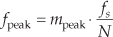
Figure 13-38 Spectral peak detection: (a) FFT magnitudes; (b) mpeak error by naive assignment; (c) mpeak algorithm error performance.
to accurately estimate the sinusoid’s center frequency in Hz.
Next, let’s say the FFT’s input sinusoid sweeps in frequency starting at the FFT’s mk bin center frequency to the center frequency of the mk+1 bin and we assign mpeak to be equal to the index value (either mk or mk+1) of the highest spectral magnitude sample. The error in that mpeak value will be that shown in Figure 13-38(b). The maximum error in that naive mpeak assignment scheme is 0.5 FFT bins (half the FFT bin spacing). Happily for us, there are more accurate methods for estimating mpeak.
As it turns out, we can estimate the signal’s index-based center frequency, mpeak, using
where Ci is a scalar correction factor in the range of −0.5 ≤ Ci ≤ 0.5. There are many algorithms, based on fitting a generic parabolic curve to the |X(m)| samples, floating around in the literature of DSP for estimating Ci. Those algorithms have varying degrees of accuracy depending on the window function applied to the FFT’s input samples.
A noteworthy correction factor expression is
This complex-valued spectral peak location estimation algorithm is quite accurate for its simplicity[3]. Its maximum frequency estimation error is roughly 0.06, 0.04, and 0.03 bin widths for signal-to-noise ratios of 3, 6, and 9 dB respectively. Not bad at all! The nice features of the algorithm are that it does not require the original time samples to be windowed, as do some other spectral peak location algorithms; and it does not require computation of FFT magnitude samples.
If a time-domain window sequence has been applied to the FFT’s input samples, then other Ci correction factor expressions should be used in place of Eq. (13-74). Three notable candidate expressions for Ci are
where again we use subscripts on C merely to identify the different expressions for the correction factor Ci. The above window-dependent P and Q factors, determined empirically, are
• Hamming, P = 1.22, Q = 0.60;
• Hanning, P = 1.36, Q = 0.55;
• Blackman, P = 1.75, Q = 0.55; and
• Blackman-Harris (3-term), P = 1.72, Q = 0.56.
Equation (13-75) is the best known peak location algorithm and has been used in the DSP business for decades. The lesser-known Eq. (13-75′) provides a more accurate windowed-FFT peak location estimate than Eq. (13-75)[39]. Inspired by Eqs. (13-74) and (13-75′), the author has developed Eq. (13-75″) which can be used in case the FFT magnitude samples are unavailable for use in Eq. (13-75′). Equation (13-75″) is also more accurate than the better-known Eq. (13-75).
The solid curve in Figure 13-38(c) shows the mpeak error in using Eq. (13-75′) with Blackman-windowed time-domain samples whose signal-to-noise ratio is 9 dB. For comparison, the dashed curve is the mpeak error when using Eq. (13-75). Equation (13-75″)’s accuracy is very similar to that of Eq. (13-75′).
Equations (13-74) and (13-75″) have the advantage that FFT magnitude calculations, with their computationally costly square root operations, are not required as is necessary with other spectral peak location algorithms described above. However, the question naturally arises, “How do we determine the index mk of the largest-magnitude FFT sample, |X(mk)|, in Figure 13-38(a) without computing square roots to obtain FFT magnitudes?” The answer is that we can use the complex vector-magnitude approximations, requiring no square root computations, described in Section 13.2.
Be aware that the above spectral peak location methods are only applicable when the majority of the signal’s spectral energy lies within a single FFT bin width (fs/N), and the FFT spectral samples are not substantially contaminated by leakage from another spectral component.
13.16 Computing FFT Twiddle Factors
Typical applications using an N-point radix-2 FFT accept N x(n) input time samples and compute N X(m) frequency-domain samples. However, there are non-standard FFT applications (for example, specialized harmonic analysis, or perhaps using an FFT to implement a bank of filters) where only a subset of the full X(m) results is required. Consider Figure 13-39 which shows the butterfly operations for an 8-point radix-2 decimation-in-frequency FFT. Notice that the FFT butterflies in Figure 13-39 are the optimized butterflies introduced in Figure 4-14. Assuming we are only interested in the X(3) and X(7) output samples, rather than compute the entire FFT we perform only the computations indicated by the bold lines in the figure.
Figure 13-39 Eight-point decimation-in-frequency FFT signal-flow diagram.
Reduced-computation FFTs are often called pruned FFTs[40-43]. To implement pruned FFTs we need to know the twiddle phase angles associated with each necessary butterfly computation in the paths of any bold signal-flow line in Figure 13-39. (As we did in Chapter 4 for simplicity, the butterflies in Figure 13-39 only show the twiddle phase-angle factors and not the entire complex-valued twiddle factors.) Here we show how to compute those individual twiddle phase angles.
13.16.1 Decimation-in-Frequency FFT Twiddle Factors
For the decimation-in-frequency (DIF) radix-2 FFT using the optimized butterflies:
• The N-point DIF FFT has log2(N) stages, numbered P = 1, 2, ..., log2(N).
• Each stage comprises N/2 butterflies.
• Not counting the −1 twiddle factors, the Pth stage has N/2P unique twiddle factors, numbered k = 0, 1, 2, ... , N/2P−1 as indicated by the upward arrows at the bottom of Figure 13-39.
Given those characteristics, the kth unique twiddle factor phase angle for the Pth stage is computed using

where 0 ≤ k ≤ N/2P−1. For example, for the second stage (P = 2) of an N = 8-point DIF FFT, the unique twiddle factor angles are
k = 0, angle = 0·2P/2 = 0·4/2 = 0
k = 1, angle = 1·2P/2 = 1·4/2 = 2.
13.16.2 Decimation-in-Time FFT Twiddle Factors
Here we present an interesting algorithm for computing the individual twiddle factor angles of a radix-2 decimation-in-time (DIT) FFT[44]. Consider Figure 13-40 showing the butterfly signal flow of an 8-point DIT FFT.
Figure 13-40 Eight-point decimation-in-time FFT signal-flow diagram.
For the decimation-in-time (DIT) FFT using the optimized butterflies:
• The N-point DIT FFT has log2(N) stages, numbered P = 1, 2, . . ., log2(N).
• Each stage comprises N/2 butterflies.
• Not counting the −1 twiddle factors, the Pth stage has N/2 twiddle factors, numbered k = 0, 1, 2, ... , N/2−1 as indicated by the upward arrows at the bottom of Figure 13-40.
Given those characteristics, the kth twiddle factor phase angle for the Pth stage is computed using
where 0 ≤ k ≤ N/2−1. The operation means the integer part of q. The [z]bit-rev function represents the three-step operation of: convert decimal integer z to a binary number represented by log2(N)−1 binary bits, perform bit reversal on the binary number as discussed in Section 4.5, and convert the bit-reversed number back to a decimal integer.
As an example of using Eq. (13-76′), for the second stage (P = 2) of an N = 8-point DIT FFT, the k = 3 twiddle factor angle is

The above [1]bit-rev operation is: Take the decimal number 1 and represent it with log2(N)−1 = 2 bits, i.e., as 012. Next, reverse those bits to a binary 102 and convert that binary number to our desired decimal result of 2.
13.17 Single Tone Detection
In this section we present an IIR filter structure used to perform spectrum analysis in the detection and measurement of single sinusoidal tones. The standard method for spectral energy is the discrete Fourier transform (DFT), typically implemented using a fast Fourier transform (FFT) algorithm. However, there are applications that require spectrum analysis only over a subset of the N bin-center frequencies of an N-point DFT. A popular, as well as efficient, technique for computing sparse FFT results is the Goertzel algorithm, using an IIR filter implementation to compute a single complex DFT spectral bin value based upon N input time samples. The most common application of this process is to detect the presence of a single continuous-wave sinusoidal tone. With that in mind, let’s look briefly at tone detection.
It’s certainly possible to use the FFT to detect the presence of a single sinusoidal tone in a time-domain sequence x(n). For example, if we wanted to detect a 30 kHz tone in a time-domain sequence whose sample rate was fs = 128 kHz, we could start by performing a 64-point FFT as shown in Figure 13-41. Then we would examine the magnitude of the X(15) complex sample to see if it exceeds some predefined threshold.
Figure 13-41 DFT method, using an FFT algorithm, to detect a 30 kHz tone.
This FFT method is very inefficient. In our example, we’d be performing 192, (64/2)(log264), complex multiplies to obtain the 64-point complex X(m) in order to compute the one X(15) in which we’re interested. We discarded 98 percent of our computation results! We could be more efficient and calculate our desired X(15) using the single-point discrete Fourier transform (DFT) in Eq. (13-77), which requires N = 64 complex multiplies using
That would be an improvement but, happily, there’s a better way. It’s called the Goertzel algorithm (pronounced ‘girt-zel).
13.17.1 Goertzel Algorithm
The Goertzel algorithm is implemented in the form of a 2nd-order IIR filter, with two real feedback coefficients and a single complex feedforward coefficient, as shown in Figure 13-42. (Although we don’t use this process as a traditional filter, common terminology refers to the structure as a filter.) This filter computes a single-bin DFT output (the mth bin of an N-point DFT) defined by
Figure 13-42 IIR filter implementation of the Goertzel algorithm.
The filter’s y(n) output is equal to the DFT output frequency coefficient, X(m), at the time index n = N, where the first time index value is n = 0. For emphasis, we remind the reader that the filter’s y(n) output is not equal to X(m) at any time index when n ≠ N. To be equivalent to the DFT, the frequency-domain index m must an integer in the range 0 ≤ m ≤ N−1. You’re welcome to think of the Goertzel algorithm as a single-bin DFT. The derivation of this filter (this algorithm) structure is readily available in the literature[45–47].
The z-domain transfer function of the Goertzel filter is
with a single z-domain zero located at z = e−j2πm/N and conjugate poles at z = e±j2πm/N as shown in Figure 13-43(a). The pole/zero pair at z = e−j2πm/N cancel each other. Having a filter pole on the unit circle is typically a risky thing to do for stability reasons, but not so with the Goertzel algorithm. Because it processes N+1-length blocks of time samples (where N is usually in the hundreds), the filter remains stable for such short time sequences because its internal data storage registers, w(n−1) and w(n−2), are reset to zero at the beginning of each new block of input data. The filter’s frequency magnitude response, provided in Figure 13-43(b), shows resonance centered at a normalized frequency of 2πm/N, corresponding to a cyclic frequency of mfs/N Hz (where fs is the signal sample rate).
Figure 13-43 Goertzel filter: (a) z-domain pole/zero locations; (b) frequency magnitude response.
The Goertzel algorithm is implemented with a complex resonator having an infinite-length unit impulse response, h(n) = ej2πnm/N, and that’s why its frequency magnitude response is so narrow. The time-domain difference equations for the Goertzel filter are
An advantage of the Goertzel filter in computing an N-point X(m) DFT bin value is that Eq. (13-80) is implemented N times while Eq. (13-81), the feedforward path in Figure 13-42, need only be computed once after the arrival of the Nth input sample. Thus for real x(n) inputs the filter requires N+2 real multiplies and 2N+1 real adds to compute an N-point X(m). However, when modeling the Goertzel filter, if the time index begins at n = 0, the filter must process N+1 time samples with x(N) = 0 to compute X(m).
In typical applications, to minimize spectral leakage, we choose N so there’s an integer number of cycles in our input sequence of the tone we’re trying to detect. N can be any integer, and the larger N is, the better the frequency resolution and noise immunity. However, larger N means more computations.
It’s worth noting that while the typical Goertzel algorithm description in the literature specifies the frequency resonance variable m to be an integer (making the Goertzel filter’s output equivalent to an N-point DFT bin output), the m in Figure 13-42 and Eq. (13-79) can in fact be any value between 0 and N−1, giving us full flexibility in specifying our filter’s resonant frequency.
13.17.2 Goertzel Example
Let’s use Goertzel to calculate the spectral magnitude of that ftone = 30 kHz tone from the Figure 13-41 example. When fs = 128 kHz and N = 64, our resonant frequency integer m is
The Goertzel filter and the necessary computations for our 30 kHz detection example are provided in Figure 13-44.
Figure 13-44 Filter, coefficients, and computations to detect the 30 kHz tone.

It’s useful to know that if we want to compute the power of X(15), |X(15)2|, the final feedforward complex calculations can be avoided by computing
In our example, Eq. (13-83) becomes
13.17.3 Goertzel Advantages over the FFT
Here are some implementation advantages of the Goertzel algorithm over the standard radix-2 FFT for single tone detection:
• N does not need to be an integer power of two.
• The resonant frequency can be any value between zero and fs Hz.
• The amount of filter coefficient (versus FFT twiddle factor) storage is reduced. If Eq. (13-83) is used, only one coefficient need be stored.
• No storing a block of input data is needed before processing can begin (as with the FFT). Processing can begin with the first input time sample.
• No data bit reversal is needed for Goertzel.
• If you implement the Goertzel algorithm M times to detect M different tones, Goertzel is more efficient (fewer multiplies) than the FFT when M < log2N.
• Computational requirements to detect a single tone (assuming real-only x(n) input) are given in Table 13-4.
Table 13-4 Single-Bin DFT Computational Comparisons
As a final note, although the Goertzel algorithm is implemented with a complex resonating filter structure, it’s not used as a typical filter where we retain each output sample. For the Goertzel algorithm we retain only every Nth, or (N+1)th, output sample. As such, the frequency magnitude response of the Goertzel algorithm when treated as a black-box process is equivalent to the |sin(x)/x|-like magnitude response of a single bin of an N-point DFT, a portion of which is shown in Figure 13-45.
Figure 13-45 Goertzel algorithm frequency magnitude response.
13.18 The Sliding DFT
The above Goertzel algorithm computes a single complex DFT spectral bin value for every N input time samples. Here we describe a sliding DFT process whose spectral bin output rate is equal to the input data rate, on a sample-by-sample basis, with the advantage that it requires fewer computations than the Goertzel algorithm for real-time spectral analysis. In applications where a new DFT output spectrum is desired every sample, or every few samples, the sliding DFT is computationally simpler than the traditional radix-2 FFT.
13.18.1 The Sliding DFT Algorithm
The sliding DFT (SDFT) algorithm computes a single bin result of an N-point DFT on time samples within a sliding window. That is, for the mth bin of an N-point DFT, the SDFT computes
Let’s take care to understand the notation of Xm(q). Typically, as in Chapter 3, the index of a DFT result value was the frequency-domain index m. In Eq. (13-85) the index of the DFT result is a time-domain index q = 0, 1, 2, 3, ..., such that our first mth-bin SDFT is Xm(0), our second SDFT is Xm(1), and so on.
An example SDFT analysis time window is shown in Figure 13-46(a) where Xm(0) is computed for the N = 16 time samples x(0) to x(15). The time window is then advanced one sample, as in Figure 13-46(b), and the new Xm(1) is calculated. The value of this process is that each new DFT result is efficiently computed directly from the result of the previous DFT. The incremental advance of the time window for each output computation leads to the name sliding DFT or sliding-window DFT.
Figure 13-46 Analysis window for two 16-point DFTs: (a) data samples in the first computation; (b) second computation samples.
We can develop the mathematical expression for the SDFT as follows: the standard N-point DFT equation, of the mth DFT bin, for the qth DFT of the time sequence x(q), x(q+1), ..., x(q+N−1) is
(Variable m is the frequency-domain index, where m = 0, 1, 2, ..., N−1.) Likewise, the expression for the next DFT, the (q+1)th DFT performed on time samples x(q+1), x(q+2), ..., x(q+N), is
Letting p = n+1 in Eq. (13-87), we can write
Shifting the limits of summation in Eq. (13-88), and including the appropriate terms (subtract the p = 0 term and add the p = N term) to compensate for the shifted limits, we write

Factoring the common exponential term (ej2πm/N), we write
Recognizing the summation in the brackets being equal to the previous Xm(q) in Eq. (13-86), and e−j2πm = 1, we write the desired recursive expression for the sliding N-point DFT as
where Xm(q+1) is the new single-bin DFT result and Xm(q) is the previous single-bin DFT value. The superscript m reminds us that the Xm(q) spectral samples are those associated with the mth DFT bin.
Let’s plug some numbers into Eq. (13-91) to reveal the nature of its time indexing. If N = 20, then 20 time samples (x(0) to x(19)) are needed to compute the first result Xm(0). The computation of Xm(1) is then
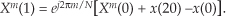
Due to our derivation method’s time indexing, Eq. (13-92) appears compelled to look into the future for x(20) to compute Xm(1). With no loss in generality, we can modify Eq. (13-91)’s time indexing so that the x(n) input samples and the Xm(q) output samples use the same time index n. That modification yields our SDFT time-domain difference equation of
Equation (13-93) reveals the value of this process in computing real-time spectra. We compute Xm(n) by subtracting the x(n−N) sample and adding the current x(n) sample to the previous Xm(n−1), and phase shifting the result. Thus the SDFT requires only two real additions and one complex multiply per output sample. Not bad at all! Equation (13-93) leads to the single-bin SDFT filter implementation shown in Figure 13-47.
Figure 13-47 Single-bin sliding DFT filter structure.
The single-bin SDFT algorithm is implemented as an IIR filter with a comb filter followed by a complex resonator. (If you need to compute all N DFT spectral components, N resonators with m = 0 to N−1 will be needed, all driven by a single comb filter.) The comb filter delay of N samples forces the SDFT filter’s transient response to be N samples in length, so the output will not reach steady state until the Xm(N−1) sample. The output will not be valid, or equivalent to Eq. (13-86)’s Xm(q), until N input samples have been processed. The z-transform of Eq. (13-93) is
where factors of Xm(z) and X(z) are collected, yielding the z-domain transfer function for the mth bin of the SDFT filter as

This complex filter has N zeros equally spaced around the z-domain’s unit circle, due to the N-delay comb filter, as well as a single pole canceling the zero at z = ej2πm/N. The SDFT filter’s complex unit impulse response h(n) and pole/zero locations are shown in Figure 13-48 for the example where m = 2 and N = 20.
Figure 13-48 Sliding DFT characteristics for m = 2 and N = 20: (a) complex impulse response; (b) pole/zero locations.
Because of the comb subfilter, the SDFT filter’s complex sinusoidal unit impulse response is finite in length—truncated in time to N samples—and that property makes the frequency magnitude response of the SDFT filter identical to the sin(Nx)/sin(x) response of a single DFT bin centered at a frequency of 2πm/N.
One of the attributes of the SDFT is that once an Xm(n) is obtained, the number of computations to compute Xm(n+1) is fixed and independent of N. A computational workload comparison between the Goertzel and SDFT filters is provided later in this section. Unlike the radix-2 FFT, the SDFT’s N can be any positive integer, giving us greater flexibility to tune the SDFT’s center frequency by defining integer m such that m = Nfi/fs, when fi is a frequency of interest in Hz and fs is the signal sample rate in Hz. In addition, the SDFT requires no bit-reversal processing as does the FFT. Like the Goertzel algorithm, the SDFT is especially efficient for narrowband spectrum analysis.
For completeness, we mention that a radix-2 sliding FFT technique exists for computing all N bins of Xm(q) in Eq. (13-85)[48,49]. That technique is computationally attractive because it requires only N complex multiplies to update the N-point FFT for all N bins; however, it requires 3N memory locations (2N for data and N for twiddle coefficients). Unlike the SDFT, the radix-2 sliding FFT scheme requires address bit-reversal processing and restricts N to be an integer power of two.
13.18.2 SDFT Stability
The SDFT filter is only marginally stable because its pole resides on the z-domain’s unit circle. If filter coefficient numerical rounding error is not severe, the SDFT is bounded-input-bounded-output stable. Filter instability can be a problem, however, if numerical coefficient rounding causes the filter’s pole to move outside the unit circle. We can use a damping factor r to force the pole and zeros in Figure 13-48(b) to be at a radius of r just slightly inside the unit circle and guarantee stability using a transfer function of

with the subscript “gs” meaning guaranteed-stable. (Section 7.5.3 provides the mathematical details of moving a filter’s poles and zeros inside the unit circle.) The stabilized feedforward and feedback coefficients become −rN and rej2πm/N, respectively. The difference equation for the stable SDFT filter becomes
with the stabilized-filter structure shown in Figure 13-49. In this case, we perform five real multiplies and four real additions per output sample.
Figure 13-49 Guaranteed-stable sliding DFT filter structure.
Using a damping factor as in Figure 13-49 guarantees stability, but the Xm(q) output, defined by
is no longer exactly equal to the mth bin of an N-point DFT in Eq. (13-85). While the error is reduced by making r very close to (but less than) unity, a scheme does exist for eliminating that error completely once every N output samples at the expense of additional conditional logic operations[50]. Determining if the damping factor r is necessary for a particular SDFT application requires careful empirical investigation. As is so often the case in the world of DSP, this means you have to test your SDFT implementation very thoroughly and carefully!
Another stabilization method worth consideration is decrementing the largest component (either real or imaginary) of the filter’s ej2πm/N feedback coefficient by one least significant bit. This technique can be applied selectively to problematic output bins and is effective in combating instability due to rounding errors that result in finite-precision ej2πm/N coefficients having magnitudes greater than unity. Like the DFT, the SDFT’s output is proportional to N, so in fixed-point binary implementations the designer must allocate sufficiently wide registers to hold the computed results.
13.18.3 SDFT Leakage Reduction
Being equivalent to the DFT, the SDFT also suffers from spectral leakage effects. As with the DFT, SDFT leakage can be reduced by the standard concept of windowing the x(n) input time samples as discussed in Section 3.9. However, windowing by time-domain multiplication would ruin the real-time computational simplicity of the SDFT. Thanks to the convolution theorem properties of discrete systems, we can implement time-domain windowing by means of frequency-domain convolution, as discussed in Section 13.3.
Spectral leakage reduction performed in the frequency domain is accomplished by convolving adjacent Xm(q) values with the DFT of a window function. For example, the DFT of a Hamming window comprises only three nonzero values, −0.23, 0.54, and −0.23. As such, we can compute a Hamming-windowed Xm(q) with a three-point convolution using
Figure 13-50 shows this process using three resonators, each tuned to adjacent DFT bins (m−1, m, and m+1). The comb filter stage need only be implemented once.
Figure 13-50 Three-resonator structure to compute a single Hamming-windowed Xm(q).
Table 13-5 provides a computational workload comparison of various spectrum analysis schemes in computing an initial Xm(n) value and computing a subsequent Xm(n+1) value.
Table 13-5 Single-Bin DFT Computation Comparison
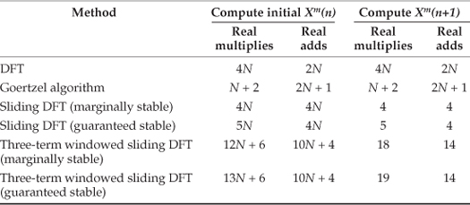
To compute the initial windowed Xm(n) values in Table 13-5, the three-term frequency-domain convolution need only be performed once, upon arrival of the Nth time sample. However, the convolution needs to be performed for all subsequent computations
We remind the reader that Section 13.3 discusses several implementation issues regarding Hanning windowing in the frequency domain, using binary shifts to eliminate the multiplications in Eq. (13-99), as well as the use of other window functions.
13.18.4 A Little-Known SDFT Property
The SDFT has a special property that’s not widely known but is very important. If we change the SDFT’s comb filter feedforward coefficient (in Figure 13-47) from −1 to +1, the comb’s zeros will be rotated counterclockwise around the unit circle by an angle of π/N radians. This situation, for N = 8, is shown on the right side of Figure 13-51(a). The zeros are located at angles of 2π(m + 1/2)/N radians. The m = 0 zeros are shown as solid dots. Figure 13-51(b) shows the zeros locations for an N = 9 SDFT under the two conditions of the comb filter’s feedforward coefficient being −1 and +1.
Figure 13-51 Four possible orientations of comb filter zeros on the unit circle.

This alternate situation is useful: we can now expand our set of spectrum analysis center frequencies to more than just N angular frequency points around the unit circle. The analysis frequencies can be either 2πm/N or 2π(m+1/2)/N, where integer m is in the range 0 ≤ m ≤ N−1. Thus we can build an SDFT analyzer that resonates at any one of 2N frequencies between 0 and fs Hz. Of course, if the comb filter’s feedforward coefficient is set to +1, the resonator’s feedforward coefficient must be ej2π(m+1/2)/N to achieve pole/zero cancellation.
13.19 The Zoom FFT
The Zoom FFT is a spectrum analysis method that blends complex down-conversion, lowpass filtering, and sample rate change by way of decimation. The Zoom FFT scheme (also called the zoom transform or spectral vernier) is used when fine-grained spectral resolution is needed within a small portion of a signal’s overall frequency bandwidth range. In some spectrum analysis situations, this technique can be more efficient than the traditional FFT. The Zoom FFT can also be useful if we’re constrained, for some reason, to use software that performs N-point FFTs for spectrum analysis of signal sequences whose lengths are greater than N.
Think of the spectral analysis situation where we require fine frequency resolution, closely spaced FFT bins, over the frequency range occupied by the signal of interest shown in Figure 13-52(a). (The other signals are of no interest to us.) We could collect many time samples and perform a large-size radix-2 FFT to satisfy our fine spectral resolution requirement. This solution is inefficient because we’d be discarding most of our FFT results. The Zoom FFT can help us improve our computational efficiency through
Figure 13-52 Zoom FFT spectra: (a) input spectrum; (b) processing scheme; (c) down-converted spectrum; (d) filtered and decimated spectrum.
• frequency translation by means of complex down-conversion,
• lowpass filtering,
• decimation, and finally
• performing a smaller-size FFT.
The process begins with the continuous x(t) signal being digitized at a sample rate of fs1 by an analog-to-digital (A/D) converter, yielding the N-point x(n) time sequence whose spectral magnitude is |X(m)| in Figure 13-52(a). The Zoom FFT technique requires narrowband filtering and decimation in order to reduce the number of time samples prior to the final FFT, as shown in Figure 13-52(b). The down-converted signal’s spectrum, centered at zero Hz, is the |Xc(m)| shown in Figure 13-52(c). (The lowpass filter’s frequency response is the dashed curve.) After lowpass filtering xc(n), the filter’s output is decimated by an integer factor D, yielding a time sequence x′c(n) whose sample rate is fs2 = fs1/D prior to the FFT operation. The key here is that the length of x′c(n) is N/D, allowing a reduced-size FFT. (N/D must be an integer power of two to enable the use of radix-2 FFTs.) We perform the FFT only over the decimated signal’s bandwidth. It’s of interest to note that, because its input is complex, the N/D-point FFT has a non-redundant frequency analysis range from −fs2/2 to +fs2/2 (unlike the case of real inputs, where the positive- and negative-frequency ranges are redundant).
The implementation of the Zoom FFT is given in Figure 13-53, where all discrete sequences are real-valued.
Figure 13-53 Zoom FFT processing details.
Relating the discrete sequences in Figure 13-52(b) and Figure 13-53, the complex time sequence xc(n) is represented mathematically as
while the complex decimated sequence x′c(n) is
The complex mixing sequence e−j2πfcnts1, where ts1 = 1/fs1, can be represented in the two forms of
Relative to FFT computations, we see that an N/D-point Zoom FFT yields a reduction in computations compared to a standard N-point FFT for spectrum analysis of a narrowband portion of some X(m) spectrum—and the computational savings improve as the decimation factor D increases. Ah, but here’s the rub. As D increases, the lowpass filters must become narrower, which increases their computational workload, and this is the trade-off we face. What we must ask ourselves is “Does the Zoom FFT’s reduced FFT size compensate for the additional quadrature mixing and dual filtering computational workload?” (It certainly would if a large-size FFT is impossible with your available FFT hardware or software.)
To gain a rough appreciation for the computational savings gained by using an N/D-point Zoom FFT, compared to a standard N-point FFT, let’s look at Figure 13-54. That figure shows the percent computational savings of a Zoom FFT versus a standard N-point FFT for various decimation factors D.
Figure 13-54 Zoom FFT computation reduction.

The curves were computed using the following definition for percent computation reduction
under the assumptions that the time sequences applied to the FFTs were windowed, and the Zoom FFT’s lowpass filters were 24th-order (25 multiplications per output sample) tapped-delay line FIR filters using folded FIR structures. In Eq. (13-103) a single real multiply and a single real addition are both considered as a single computation.
The range where Figure 13-54’s curves have negative values means that the Zoom FFT is less efficient (more computations) than a standard N-point FFT. As it turns out, the curves in Figure 13-54 quickly move downward in efficiency as the order of the lowpass filters increases. So it’s in our best interest to make the lowpass filters as computationally efficient as possible. Some ways to do this are:
• Partition the lowpass filtering/decimation process into multiple stages (multistage decimation) as discussed in Chapter 10.
• Incorporate cascaded integrator-comb (CIC) filters into the lowpass filtering if the spectrum of interest is very narrowband relative to the fs1.
• Use interpolated FIR filters as discussed in Chapter 7.
• Use polyphase filters as discussed in Chapter 10.
• Restrict the decimation factor D to be an integer power of two such that efficient half-band filters can be used.
• Use IIR filters, if spectral phase distortion can be tolerated.
13.20 A Practical Spectrum Analyzer
Here’s a clever trick for implementing a practical spectrum analyzer by modifying the time-domain data before applying a radix-2 FFT algorithm.
Let’s say we need to build a spectrum analyzer to display, in some manner, the spectral magnitude of a time-domain sequence. We’d like our spectrum analyzer, a bank of bandpass filters, to have a frequency magnitude response something like that shown in Figure 13-55(a). For spectrum analysis, the radix-2 FFT algorithm comes to mind first, as it should. However, the frequency response of individual FFT bins is that shown in Figure 13-55(b), with their non-flat passbands, unpleasantly high sidelobes due to spectral leakage, and overlapped main lobes. We can reduce the leakage sidelobe levels by windowing the time-domain sequence, but that leads to the increased main lobe overlap shown in Figure 13-55(c) and degraded frequency resolution, and we still have considerable droop in the passband response.
Figure 13-55 Spectrum analyzer: (a) desired frequency response; (b) frequency response of standard FFT bins; (c) windowed-data FFT frequency response.

Here’s how we can solve our problem. Consider an x(n) sequence of time samples of length M whose M-point DFT is
Next, consider partitioning x(n) into P subsequences, each of length N. Thus PN = M. If we add, element for element, the P subsequences, we’ll obtain a new y(n) sequence of length N whose N-point DFT is
The good news is that
That is, the DFT magnitudes of sequence y(n) are equal to a subset of the longer DFT magnitudes of x(n). Y(m) is equal to a decimated-by-P version of X(k). The relationship between |Y(m)| and |X(Pm)| doesn’t seem too important, but here’s how we’ll take advantage of that equality. We’ll create an M-point window sequence whose single-bin frequency response, of an M-point FFT, is the bold curve in Figure 13-56(a). Instead of computing all M FFT outputs, we’ll only compute every Pth output of the M-point FFT, implementing Eq. (13-105), giving us the decimated FFT bins shown in Figure 13-56(b). In that figure P = 5.
Figure 13-56 FFT spectrum analyzer frequency responses.
That decimation of the frequency-domain |X(k)| spectrum is accomplished in the time domain by a time-aliasing operation as shown in Figure 13-57, where again, for example, P = 5. We partition the M-sample windowed-x(n) time sequence into P = 5 subsequences and sum the subsequences element for element to obtain the time-aliased N-sample y(n) sequence. Next, the |Y(m)| spectral magnitudes are computed using the radix-2 FFT.
Figure 13-57 FFT spectrum analyzer process.
This process, sweet in its simplicity, is called the weighted overlap-add structure[51,52] and is alternatively referred to as the window-presum FFT[53]. The most difficult part of building this analyzer is designing the M-point window sequence used to window the original x(n) sequence. We do that by specifying the window’s frequency-domain characteristics, just as if it were a digital filter frequency response, and using our favorite filter design software to compute the filter’s time-domain impulse response. That impulse response is the window sequence. With the signal sample rate being fs, the window’s passband width will be just less than fs/N. This makes the filter’s one-sided passband width roughly fs/2N.
Figure 13-58 illustrates an example FFT analyzer with fs = 1 MHz, N = 64, with P = 5 making M = 320. The FFT bin spacing is 15.63 kHz, so the window design was set for a passband width of 10 kHz (thus the filter’s one-sided bandwidth was specified as 5 kHz in a Parks-McClellan design routine). Figure 13-58(a) is the 320-point window sequence, while Figure 13-58(b) shows the FFT analyzer’s response for the m = 3, 4, and 5 bins, with the |Y(4)| response being the solid curve.
Figure 13-58 FFT analyzer example: (a) window sequence; (b) analyzer response for 64-point FFT bins |Y(3)|, |Y(4)|, and |Y(5)|.

The width of the spectrum analyzer’s passbands is primarily controlled by the window’s passband width. The center frequencies of the analyzer’s individual passbands are defined by fs/N. What this means is that the amount of overlap in the analyzer’s passbands depends on both the window’s passband width, fs, and N. The dynamic range of the analyzer can be increased by increasing P, which increases M and lengthens the x(n) sequence. As M is increased, the longer window sequence will yield analyzer passbands having a more rectangular shape, lower sidelobes, and reduced passband ripple.
Again, to implement this radix-2 FFT spectrum analyzer, the length of the time-domain sequence (M) must be an integer multiple (P) of an integer power of two (N).
13.21 An Efficient Arctangent Approximation
Fast and accurate methods for computing the arctangent of a complex number x = I + jQ have been the subject of extensive study because estimating the angle θ of a complex value has so many applications in the field of signal processing. The angle of x is defined as θ = tan−1(Q/I).
Practitioners interested in computing high-speed (minimum computations) arctangents typically use look-up tables where the value Q/I specifies a memory address in read-only memory (ROM) containing an approximation of angle θ. For high accuracy, though, this method may require very large ROM tables. Those folk interested in enhanced accuracy implement compute-intensive high-order algebraic polynomials, where Chebyshev polynomials seem to be more popular than Taylor series, to approximate angle θ. But this polynomial method requires many computations. Unfortunately, because it is such a nonlinear function, the arctangent is resistant to accurate reasonable-length polynomial approximations. There is a processing method called “CORDIC” (an acronym for COordinate Rotation DIgital Computer) that can compute accurate arctangents using only binary shifts and additions, but this technique can require long processing times. So, sadly, we end up choosing the least undesirable method for computing arctangents.
If you want to become famous in the field of signal processing, all you have to do is produce a very accurate arctangent algorithm that requires very few computations. (After solving that problem, you can then apply your skills to developing a perpetual-motion machine.)
Here’s another contender in the arctangent approximation race that uses neither look-up tables nor high-order polynomials. We can estimate the angle θ, in radians, of x = I + jQ using the following approximation:
where −1 ≤ Q/I ≤ 1. That is, θ is in the range −45 to +45 degrees (−π/4 ≤ θ ≤ +π/4 radians). Equation (13-107) has surprisingly good performance, particularly for a 90-degree (π/2 radians) angle range. Figure 13-59 shows the maximum error is 0.28 degrees using Eq. (13-107) when the true angle θ is within the angular range of −45 to +45 degrees
Figure 13-59 Estimated angle θ’ error in degrees.
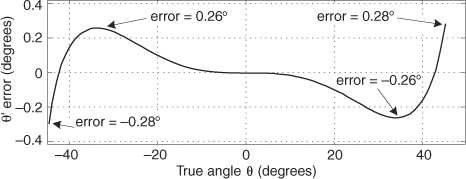
A nice feature of this θ’ computation is that it can be written as
eliminating Eq. (13-107)’s Q/I division operation, at the expense of two additional multiplies. Another attribute of Eq. (13-108) is that a single multiply can be eliminated with binary right shifts. The product 0.28125Q2 is equal to (1/4+1/32)Q2, so we can implement the product by adding Q2 shifted right by two bits to Q2 shifted right by five bits. This arctangent scheme may be useful in a digital receiver application where I2 and Q2 have been previously computed in conjunction with an AM (amplitude modulation) demodulation process or envelope detection associated with automatic gain control (AGC).
We can extend the angle range over which our approximation operates. If we break up a circle into eight 45-degree octants, with the first octant being 0 to 45 degrees, we can compute the arctangent of a complex number residing in any octant. We do this by using the rotational symmetry properties of the arctangent:
Those properties allow us to create Table 13-6.
Table 13-6 Octant Location versus Arctangent Expressions
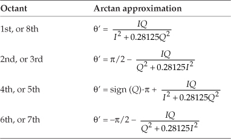
So we have to check the signs of Q and I, and see if |Q| > |I|, to determine the octant location, and then use the appropriate approximation in Table 13-6. Section 13.38 gives a method for determining the octant of the original θ. The maximum angle approximation error is 0.28 degrees for all octants.
13.22 Frequency Demodulation Algorithms
In Section 9.2 we discussed the notion of measuring the instantaneous frequency of a complex sinusoidal signal by computing the derivative of the signal’s instantaneous θ(n) phase as shown in Figure 13-60. This is the traditional discrete-signal FM demodulation method, and it works fine. The demodulator’s instantaneous output frequency is
Figure 13-60 Frequency demodulator using an arctangent function.
where fs is the sample rate in Hz.
Computing instantaneous phase θ(n) requires an arctangent operation, which is difficult to implement accurately without considerable computational resources. Here’s a scheme for computing Δθ(n) for use in Eq. (13-111) without the intermediate θ(n) phase computation (and its pesky arctangent)[54,55]. We derive the Δθ(n) computation algorithm as follows, initially using continuous-time variables based on the following definitions:
The following algorithm is based on the assumption that the spectrum of the i(t) + jq(t) signal is centered at zero Hz. First, we let r(t) = q(t)/i(t) be the signal for which we’re trying to compute the derivative of its arctangent. The time derivative of tan−1[r(t)], a calculus identity, is
Because d[r(t)]/dt = d[q(t)/i(t)]/dt, we use the calculus identity for the derivative of a ratio to write
Plugging Eq. (13-114)’s result into Eq. (13-113), we have
Replacing r(t) in Eq. (13-115) with q(t)/i(t) yields
We’re getting there. Next we multiply the numerator and denominator of the first ratio in Eq. (13-116) by i2(t) and replace t with our discrete time variable index n to arrive at our final result of
The implementation of this algorithm, where the derivatives of i(n) and q(n) are i′(n) and q′(n) respectively, is shown in Figure 13-61(a). The Δϕ(n) output sequence is used in Eq. (13-111) to compute instantaneous frequency.
Figure 13-61 Frequency demodulator without arctangent: (a) standard process; (b) simplified process.
The Differentiators are tapped-delay line FIR differentiating filters with an odd number of taps. The z−D delay elements in Figure 13-61(a) are used to time-align the input i(n) and q(n) sequences with the outputs of the differentiators. The delay is D = (K−1)/2 samples when a K-tap differentiator is used. In practice, those z−D delays can be obtained by tapping off the center tap of the differentiating filter as shown in Figure 13-61(b), where the differentiator is an FIR filter having 1,0,−1 as coefficients, and D = 1 in this case[55]. Such a differentiator is the simple “central-difference differentiator” we discussed in Chapter 7, and its optimum performance occurs when the input signal is low frequency relative to the demodulator’s input fs sample rate. Reference [55] reports acceptable results using the differentiator in Figure 13-61(b), but that’s only true if the complex input signal has a bandwidth no greater than fs/10.
If the i(n)+jq(n) signal is purely FM and hard limited such that i2(n)+q2(n) = Constant, the denominator computations in Eq. (13-117) need not be performed. In this case, using the 1,0,−1 coefficient differentiators, the FM demodulator is simplified to that shown in Figure 13-61(b), where the Scaling operation is multiplication by the reciprocal of Constant.
Two final things to consider: First, in practice we may want to detect the unusual situation where both i(n) and q(n) are zero-valued, making the denominator of Eq. (13-117) equal to zero. We should set Δθ(n) to zero in that case. Second, for real-world noisy signals it may be prudent to apply the Δθ(n) output to a lowpass filter to reduce unwanted high-frequency noise.
13.23 DC Removal
When we digitize analog signals using an analog-to-digital (A/D) converter, the converter’s output typically contains some small DC bias; that is, the average of the digitized time samples is not zero. That DC bias may have come from the original analog signal or from imperfections within the A/D converter. Another source of DC bias contamination in DSP is when we truncate a discrete sequence from a B-bit representation to word widths less than B bits. Whatever the source, unwanted DC bias on a signal can cause problems. When we’re performing spectrum analysis, any DC bias on the signal shows up in the frequency domain as energy at zero Hz, the X(0) spectral sample. For an N-point FFT the X(0) spectral value is proportional to N and becomes inconveniently large for large-sized FFTs. When we plot our spectral magnitudes, the plotting software will accommodate any large X(0) value and squash down the remainder of the spectrum in which we are more interested.
A nonzero DC bias level in audio signals is particularly troublesome because concatenating two audio signals, or switching between two audio signals, results in unpleasant audible clicks. In modern digital communications systems, a DC bias on quadrature signals degrades system performance and increases bit error rates. With that said, it’s clear that methods for DC removal are of interest to many DSP practitioners.
13.23.1 Block-Data DC Removal
If you’re processing in non-real time, and the signal data is acquired in blocks (fixed-length sequences) of block length N, DC removal is straightforward. We merely compute the average of our N time samples and subtract that average value from each original sample to yield a new time sequence whose DC bias will be extremely small.
This scheme, although very effective, is not compatible with continuous-throughput (real-time) systems. For real-time systems we’re forced to use filters for DC removal.
13.23.2 Real-Time DC Removal
The author has encountered three proposed filters for DC removal[56–58]; their structures are shown in Figures 13-62(a), 13-62(b), and 13-62(c).
Figure 13-62 Filters used for DC bias removal.
Ignoring the constant gains of those DC-removal filters, all three filters have identical performance with the general DC-removal filter structure in Figure 13-62(d) having a z-domain transfer function of
(It’s not immediately obvious that the filters in Figures 13-62(c) and 13-62(d) are equivalent. You can verify that equivalency by writing the time-domain difference equations relating the various nodes in the feedback path of Figure 13-62(c)’s filter. Next, convert those equations to z-transform expressions and solve for Y(z)/X(z) to yield Eq. (13-118)).
Because the DC-removal filters can be modeled with the general DC-removal filter in Figure 13-62(d), we provide the general filter’s frequency magnitude and phase responses in Figures 13-63(a) and 13-63(b) for α = 0.95. The filter’s pole/zero locations are given in Figure 13-63(c), where a zero resides at z = 1 providing infinite attenuation at DC (zero Hz) and a pole at z = α making the magnitude notch at DC very sharp. The closer α is to unity, the narrower the frequency magnitude notch centered at zero Hz. Figure 13-63(d) shows the general filter’s unit-sample impulse response.
Figure 13-63 DC-removal filter, α = 0.95: (a) magnitude response; (b) phase response; (c) pole/zero locations; (d) impulse response.
Figure 13-64 shows the time-domain input/output performance of the general DC-removal filter (with α = 0.95) when its input is a sinusoid suddenly contaminated with a DC bias of 2 beginning at the 100th time sample and disappearing at the 200th sample. The DC-removal filter works well.
Figure 13-64 DC-removal filter performance: (a) filter input with sudden DC bias; (b) filter output.
13.23.3 Real-Time DC Removal with Quantization
Because the general DC-removal filter has feedback, the y(n) output samples may require wider binary word widths than those used for the x(n) input samples. This could result in overflows in fixed-point binary implementations. The scaling factors of (1+α)/2 and K, in Figures 13-62(a) and 13-62(b), are less than one to minimize the chance of y(n) binary overflow.
In fixed-point hardware the y(n) samples are often truncated to the same word width as the input x(n). This quantization (by means of truncation) will induce a negative DC bias onto the quantized output samples, degrading our desired DC removal. When we truncate a binary sample value, by discarding some of its least significant bits, we induce a negative error in the truncated sample. Fortunately, that error value is available for us to add to the next unquantized signal sample, increasing its positive DC bias. When that next sample is truncated, the positive error we’ve added minimizes the negative error induced by truncation of the next sample.
Figure 13-65(a) shows the addition of a quantizing sigma-delta modulator to the feedback path of the DC-removal filter given in Figure 13-62(c). The positive error induced by truncation quantization (the Q block) is delayed by one sample time and fed back to the quantizer input. Because the modulator has a noise shaping property where quantization error noise is shifted up in frequency, away from zero Hz (DC), the overall DC bias at the output of the filter is minimized[57].
Figure 13-65 Two DC-removal filters using fixed-point quantization to avoid data overflow.
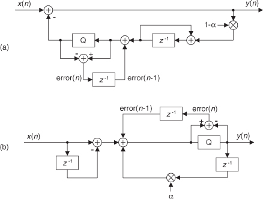
An equivalent quantization noise shaping process can be applied to a Direct Form I version of the Figure 13-62(d) general DC-removal filter as shown in Figure 13-65(b). Again, the positive quantization error is delayed by one sample time and added to the quantizer input[59–61]. To reiterate, the DC-removal filters in Figure 13-65 are used to avoid binary data overflow, by means of quantization, without the use of scaling multipliers.
Later in this chapter we discuss a DC-removal filter whose frequency response exhibits linear phase.
13.24 Improving Traditional CIC Filters
A major design goal for cascaded integrator-comb (CIC) filters, as introduced in Chapter 10 in conjunction with sample rate conversion, is to minimize their hardware power consumption by reducing data word width and reducing data clock rates wherever possible. Here we introduce a clever trick that reduces CIC filter power consumption using nonrecursive structures, by means of polynomial factoring, easing the word width growth problem. These nonrecursive structures require that the sample rate change R be an integer power of two, enhancing computational simplicity through polyphase decomposition, transposed structures, simplified multiplication, and substructure sharing[62–64]. (These processes are not complicated; they merely have fancy names.) Next, we’ll review a nonrecursive scheme that enables sample rate changes other than powers of two. The following discussion assumes that the reader is familiar with the CIC filter material in Chapter 10.
13.24.1 Nonrecursive CIC Filters
Recall that the structures of 1st-order (M = 1) and 3rd-order (M = 3) CIC decimation filters, having a comb delay equal to the sample rate change factor R, are those shown in Figure 13-66. As presented in Chapter 10, the transfer function of an Mth-order decimating CIC filter can be expressed in either a recursive form or a nonrecursive form, as indicated in Eq. (13-119). (You could, if you wish, use the geometric series discussion in Appendix B to show the equality of the two forms of the filter’s transfer function.)
Figure 13-66 Recursive decimation CIC filters: (a) 1st-order filter; (b) 3rd-order filter.
Now if the sample rate change factor R is an integer power of two, R = 2K where K is some positive integer, the Eq. (13-119′) Mth-order nonrecursive polynomial form of Hcic(z) can be factored as
The reward for this factorization is that the CIC filter can then be implemented with K nonrecursive stages as shown in Figure 13-67. This implementation eliminates filter feedback loops with their unpleasant binary word width growth. The data word width does increase in this nonrecursive structure by M bits for each stage, but the sampling rate is reduced by a factor of two for each stage. This nonrecursive structure has been shown to consume less power than the Figure 13-66(b) recursive implementation for filter orders greater than three and decimation/interpolation factors larger than eight[64]. Thus the power savings from sample rate reduction are greater than the power consumption increase due to data word width growth.
Figure 13-67 Multistage Mth-order nonrecursive CIC structure.
Happily, further improvements are possible with each stage of this nonrecursive structure[63]. For example, assume we desire an M = 5th-order decimating CIC for Stage 1 in Figure 13-67. In that case, the stage’s transfer function is
The second step in Eq. (13-121), known as polyphase decomposition[65–69], enables a polyphase implementation having two parallel paths as shown in Figure 13-68. The initial delay element and the dual decimation-by-two operations are implemented by routing the odd-indexed input samples to FA′(z), and the even-indexed samples to FB′(z). Because we implement decimation by two before the filtering, the new polyphase components are FA′(z) = 1 + 10z−1 + 5z−2, and FB′(z) = 5 + 10z−1 + z−2 implemented at half the data rate into the stage. (Reducing data rates as early as possible is a key design goal in the implementation of CIC decimation filters.)
Figure 13-68 Polyphase structure of a single nonrecursive 5th-order CIC stage.
The FA′(z) and FB′(z) polyphase components are implemented in a tapped-delay line fashion and, fortunately, further simplifications are possible. Let’s consider the FA′(z) polyphase filter component, in a tapped-delay line configuration, shown in Figure 13-69(a). The transposed version of this filter is presented in Figure 13-69(b) with its flipped coefficient sequence. The adder in Figure 13-69(a) must perform two additions per input data sample, while in the transposed structure no adder need perform more than one add per data sample. Thus the transposed structure can operate at a higher speed.
Figure 13-69 Filter component FA′(z): (a) delay line structure; (b) transposed structure; (c) simplified multiplication; (d) substructure sharing.
The next improvement uses simplified multiplication, as shown in Figure 13-69(c), by means of arithmetic shifts and adds. Thus a factor of five is implemented as 22 + 1, eliminating all multiplications. Finally, because of the transposed structure, we can use the technique of substructure sharing in Figure 13-69(d) to reduce the hardware component count. Pretty slick! By the way, these nonrecursive filters are still called cascaded integrator-comb filters, even though they have no integrators. Go figure.
Table 13-7 is provided to help the reader avoid computing the polynomial equivalent of several Mth-order nonrecursive stages, as was performed in Eq. (13-121).
Table 13-7 Expansions of (1 + z−1)M
13.24.2 Nonrecursive Prime-Factor-R CIC Filters
The nonrecursive CIC decimation filters described above have the restriction that the R decimation factor must be an integer power of two. That constraint is loosened due to a clever scheme of factoring R into a product of prime numbers[70]. This multiple prime-factor-R technique is based on the process of factoring integer R into the form R = 2p3q5r7s11t ..., where 2, 3, 5, 7, 11 are the prime numbers. (This process is called prime factorization, or prime decomposition, and has been of interest since the days of Euclid.) Then the appropriate number of CIC subfilters are cascaded as shown in Figure 13-70(a). The fortunate condition is that those Mth-order CIC filters are described by
Figure 13-70 Multiple prime-factor nonrecursive CIC example: (a) cascaded-stage structure; (b) 2nd-order, R = 90, nonrecursive CIC example.
and so on, enabling nonrecursive implementations.
Due to space constraints, the elegant and arduous derivation of this technique is not given here; but this process can be illustrated with an example. Assume we desire a 2nd-order (M = 2) CIC filter with a decimation factor of R = 90. That decimation rate is factored as 90 = (2)(3)(3)(5), so p = 1, q = 2, and r = 1. Our composite CIC filter is implemented as H2(z)H3(z)H3(z)H5(z) shown in Figure 13-70(b).
At first glance the many additions of the Figure 13-70(b) CIC filter appear to aggravate the power consumption of such a filter, but the reduced sample rates significantly reduce power requirements[70]. If one addition in Section 1 of Figure 13-70(b) consumes P units of power, then Section 1 consumes 2P units of power, and each addition in the first portion of Section 2 consumes P/2 units of power. Each addition in the second portion of Section 2 consumes P/6 of units power, while each addition in Section 3 consumes P/18 units of power.
We have flexibility here because the subfilters in each section of Figure 13-70(b) can be implemented recursively or nonrecursively, as indicated in Eq. (13-122). In nonrecursive implementations the polyphase decomposition, transposed structures, simplified multiplication, and substructure sharing schemes can be applied. CIC filter design certainly has come a long way since its introduction in the early 1980s.
13.25 Smoothing Impulsive Noise
In practice we may be required to make precise measurements in the presence of high noise or interference. Without some sort of analog signal conditioning, or digital signal processing, it can be difficult to obtain stable and repeatable measurements. This impulsive-noise smoothing trick, originally developed to detect microampere changes in milliampere signals, describes a smoothing algorithm that improves the stability of precision measurements in the presence of impulsive noise[71].
Practical noise-reduction methods often involve multiple-sample averaging (block averaging) of a sequence of measured values, x(n), to compute a sequence of N-sample arithmetic means, M(q). As such, the block-averaged sequence M(q) is defined by
where the time index of the averaging process is q = 0, 1, 2, 3, etc. When N = 10, for example, for the first block of data (q = 0), time samples x(0) through x(9) are averaged to compute M(0). For the second block of data (q = 1), time samples x(10) through x(19) are averaged to compute M(1), and so on[72].
The following impulsive-noise smoothing algorithm processes a block of time-domain samples, obtained through periodic sampling, and the number of samples, N, may be varied according to individual needs and processing resources. The processing of a single block of N time samples proceeds as follows: Collect N+2 samples of x(n), discard the maximum (most positive) and minimum (most negative) samples to obtain an N-sample block of data, and compute the arithmetic mean, M(q), of the N samples. Each sample in the block is then compared to the mean. The direction of each sample relative to the mean (greater than, or less than) is accumulated, as well as the cumulative magnitude of the deviation of the samples in one direction (which, by definition of the mean, equals that of the other direction). This data is used to compute a correction term that is added to the mean according to the following formula,
where A(q) is the corrected mean, M(q) is the arithmetic mean (average) from Eq. (13-123), Pos is the number of samples greater than M(q), Neg is the number of samples less than M(q), and Dtotal is the sum of deviations from the mean (absolute values and one direction only). Dtotal, then, is the sum of the differences between the Pos samples and M(q).
For an example, consider a system acquiring ten measured samples of 10, 10, 11, 9, 10, 10, 13, 10, 10, and 10. The mean is M = 10.3, the total number of samples positive is Pos = 2, and the total number of samples negative is Neg = 8 (so Pos−Neg = −6). The total deviation in either direction from the mean is 3.4 (using the eight samples less than the mean, (10.3−10) times 7 plus (10.3−9); or using the two samples greater than the mean, (13−10.3) plus (11−10.3)). With Dtotal = 3.4, Eq. (13-124) yields an improved result of A = 10.096.
The smoothing algorithm’s performance, relative to traditional block averaging, can be illustrated by example. Figure 13-71(a) shows a measured 300-sample x(n) signal sequence comprising a step signal of amplitude one contaminated with random noise (with a variance of 0.1) and two large impulsive-noise spike samples.
Figure 13-71 Noise smoothing for N = 10: (a) input x(n) signal; (b) block average output (white) and impulsive-noise smoothing algorithm output (solid).
A few meaningful issues regarding this noise smoothing process are:
• The block size (N) used in the smoothing algorithm can be any integer, but for real-time fixed binary-point implementations it’s beneficial to set N equal to an integer power of two. In that case the compute-intensive division operations in Eqs. (13-123) and (13-124) can be accomplished by binary arithmetic right shifts to reduce the computational workload.
• If there’s a possibility that more than two large noise spikes are contained in a block of input samples, then we collect more than N+2 samples of x(n) and discard the appropriate number of maximum and minimum samples to eliminate the large impulsive noise samples.
• We could forgo the Eq. (13-124) processing and merely perform Eq. (13-123) to compute the mean M(q). In that case, for a given N, the standard deviation of M(q) would be roughly 15 to 20 percent greater than A(q).
As pointed out by M. Givens, impulsive noise can also be reduced by a class of filters known as median filters[73]. Median filters, not covered in this text, are typically used in noise reduction of two-dimensional signals (images). However, median filters can also be implemented to process one-dimensional signals, such as our x(n) signal here, and should be considered in any impulsive-noise reduction application.
13.26 Efficient Polynomial Evaluation
On the off chance that you didn’t know, there are two popular tricks used to speed up polynomial evaluations (computations), known as Horner’s Rule and Estrin’s Method. We illustrate those two techniques below.
13.26.1 Floating-Point Horner’s Rule
Horner’s Rule uses nested operations to reduce the number of multiply operations needed to compute polynomials. An example of a polynomial computation is, for example, using the following expression to compute the arctangent of x:
To see how the computational workload of polynomial evaluations can be reduced, consider the following kth-order polynomial:
It can be rewritten as
where the “H” subscript means Horner. Using this method to compute polynomials
• reduces the number of necessary multiply operations, and
• is straightforward to implement using programmable DSP chips with their multiply and accumulate (MAC) architectures.
For example, consider the 5th-order polynomial
Evaluated in the standard way, Eq. (13-128) would require nine multiplies and five additions, whereas the Horner version
requires only five multiplies and five adds when the computations begin with the innermost multiply and add operations (c5x + c4).
Here are a few examples of polynomials in the Horner format:


By the way, the multiplications and additions cannot be performed in parallel. Because Horner’s Rule is inherently serial, we need the result of the last multiplication before we can start the next addition, and that addition result is needed before the follow-on multiplication.
Horner’s Rule is another of those handy computer techniques we use whose origins are very old. Chinese mathematicians described it in the 1200s. European mathematicians (including William Horner) rediscovered and publicized it in the early 1800s. However, it seems Sir Isaac Newton also invented and used it in the 1600s.
13.26.2 Horner’s Rule in Binary Shift Multiplication/Division
The Horner’s Rule method of nested multiplications has special significance for us when we evaluate polynomials using fixed-point number formats. Using Horner’s Rule enables us to minimize the truncation quantization error when we use binary right shifts to implement fractional multiplications. For example, if we are using fractional fixed-point numbers in the 1.15 format, as described in Section 12.1.6, and we want to multiply an x(n) sample by 0.3125, we can perform that multiplication as
Those scaling factors on the right side of Eq. (13-132) can be implemented using binary right shifts by two and four bits. The larger the right shifts, however, the greater the truncation quantization errors in this type of fractional multiplication. Using Horner’s Rule, we can implement Eq. (13-132) as
where the maximum binary right shift is by two bits, reducing the resultant truncation quantization error.
13.26.3 Estrin’s Method
If your computing hardware is able to perform multiple parallel (simultaneous) multiply and accumulate (MAC) operations, we can increase the computational speed of Horner’s Rule by using parallel processing in a technique called Estrin’s Method.
Here’s how Estrin’s Method works: Various kth-order polynomials, such as that in Eq. (13-126), can be evaluated using
The above expressions look complicated, but they’re really not. The terms inside parentheses, brackets, and curly brackets are nested sub-expressions of the form axq + b—precisely what we need for MAC operations. For example, the sub-expressions within parentheses can be computed simultaneously with a DSP processor’s parallel MAC operations.
To illustrate Estrin’s Method, if your processing hardware can perform four simultaneous MAC operations, and assuming value x2 has been previously computed, we can evaluate polynomial f7(x) in the following three steps:
1. U = (c7x +c6), V = (c5x +c4), W = (c3x +c2), and X = (c1x +c0)
2. Y = (Ux2 +V), Z = (Wx2 +X), x4 = (x2x2 +0)
3. f7(x) = (Yx4 +Z)
The four computations in Step 1 are performed simultaneously. Likewise, the three computations in Step 2 are performed simultaneously. The final Step 3 is a single MAC operation.
Yes, Estrin’s Method requires multiple processing steps, but this method is able to avoid much of the inherent (slow) serial processing dictated by Horner’s Rule. The bottom line here is that while Estrin’s Method does not reduce the computational workload (number of multiplies and additions) of Horner’s Rule, it does increase the computational speed of polynomial evaluations by taking advantage of modern-day parallel processing hardware architectures.
13.27 Designing Very High-Order FIR Filters
There are linear-phase filtering applications wherein we’re interested in designing very high-performance (very narrow passband widths, and/or very high attenuation) nonrecursive FIR filters. Consider the possibility that you’ve used Eq. (7-34), or some other algorithm, to determine that you need to implement a 2000-tap linear-phase FIR filter. Then when you try to design such a filter using your trusty Parks-McClellan Exchange-based (Remez) filter design software, you obtain unusable design results. It happens that some software incarnations of the Parks-McClellan Exchange algorithm have convergence problems (inaccurate results) when the number of filter taps, or filter order, exceeds 400 to 500. There’s a slick way around this high-order FIR filter design problem using a frequency-domain zero-stuffing technique.†
† I thank my DSP pal Eric Jacobsen, Minister of Algorithms at Abineau Communications, for publicizing this technique.
If our FIR filter design software cannot generate FIR coefficient sets whose lengths are in the thousands, then we can design a shorter-length set of coefficients and interpolate those coefficients (time-domain impulse response) to whatever length we desire. Rather than use time-domain interpolation schemes and account for their inaccuracies, we can simplify the process by performing time-domain interpolation by means of frequency-domain zero stuffing.
An example of the process is as follows: Assume that we have a signal sampled at a rate of fs = 1000 Hz. We want a lowpass filter whose cutoff frequency is 20 Hz with 60 dB of stopband attenuation. Compounding the problem are the requirements for linear phase and removal of any DC (zero Hz) component from the signal. (Those last two requirements preclude using the DC-removal schemes in Section 13.23.) First, we design a prototype nonrecursive FIR filter having, say, N = 168 coefficients whose desired frequency response magnitude is shown in Figure 13-72(a); its hp(k) coefficients are depicted in Figure 13-72(b). Next, we compute a 168-point DFT of the coefficients to obtain the frequency-domain samples Hp(m) whose magnitudes are shown in Figure 13-72(c).
Figure 13-72 Prototype FIR filter: (a) magnitude response; (b) hp(k) coefficients; (c) |Hp(m)| magnitudes of the 168-point DFT of hp(k).
Under the assumption that our final desired filter requires roughly 1600 taps, we’ll interpolate the hp(k) prototype impulse response by a factor of M = 10. We perform the interpolation by inserting (M−1)N zeros in the center of the Hp(m) frequency-domain samples, yielding a 1680-point H(m) frequency-domain sequence whose magnitudes are shown in Figure 13-73(a). Finally, we perform a 1680-point inverse DFT on H(m) to obtain the interpolated h(k) impulse response (coefficients), shown in Figure 13-73(b), for our desired filter. (The ten-fold compression of the Hp(m) passband samples results in a ten-fold expansion of the hp(k) impulse response samples.) The frequency magnitude response of our final very high-order FIR filter, over the frequency range of −30 to 30 Hz, is provided in Figure 13-73(c).
Figure 13-73 Desired FIR filter: (a) magnitude of zero-stuffed Hp(m); (b) interpolated h(k) coefficients; (c) magnitude of desired frequency response.
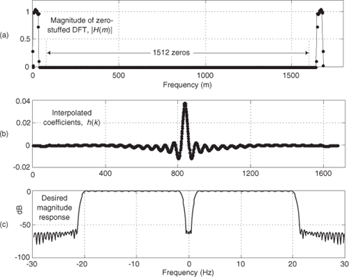
With this process, the prototype filter’s hp(k) coefficients are preserved within the interpolated filter’s coefficients if the Hp(N/2) sample (fs/2) is zero. That condition ensures that H(m) exhibits conjugate symmetry and forces the h(k) coefficients to be real-only.
The design steps for this high-order filter design scheme are:
• With the desired filter requiring MN taps, set the number of prototype filter coefficients, N, to an integer value small enough so your FIR filter design software provides usable results. The integer interpolation factor M equals the number of desired taps divided by N.
• Design the N-tap prototype FIR filter accounting for the M-fold frequency compression in the final filter. (That is, cutoff frequencies for the prototype filter are M times the desired final cutoff frequencies.)
• Perform an N-point DFT on the prototype filter’s hp(k) coefficients to obtain Hp(m).
• Insert M−1 zero-valued samples just before the Hp(N/2) sample of Hp(m) to obtain the new MN-point H(m) frequency response.
• Compute the MN-point inverse DFT of H(m), yielding an MN-length interpolated h(k) coefficient set. (Due to computational errors, discard the imaginary part of h(k), making it real-only.)
• Multiply h(k) by M to compensate for the 1/M amplitude loss induced by interpolation.
• Test the h(k) coefficient set to determine its actual frequency response using standard filter analysis methods. (One method: append thousands of zeros to h(k) and perform a very large FFT on the expanded sequence.)
An example application of this filter design is when you’re building a high-performance lowpass polyphase filter, as discussed in Chapter 10. (The structures of the high-performance interpolated FIR and frequency sampling lowpass filters don’t permit their decomposition into polyphase subfilters for such an application.)
13.28 Time-Domain Interpolation Using the FFT
The thoughtful reader may have looked at the above Section 13.27 FIR filter impulse response interpolation scheme and wondered, “If we can interpolate time-domain impulse responses, we should be able to interpolate time-domain signals using the same frequency-domain zero-stuffing method.” To quote Rocky Balboa, “This is very true.” In fact, the Section 13.27 interpolation-by-M process applied to time signals is sometimes called exact interpolation because its performance is equivalent to using an ideal, infinite-stopband attenuation, time-domain interpolation filter. Let’s see how this interpolation scheme works.
To establish our notation, let’s say we compute the FFT of an N-point x(n) time sequence to produce its X(m) frequency-domain samples. Next we stuff (M-1)N zeros in the middle of X(m) to yield the MN-length Xint(m) frequency samples, where MN is an integer power of two. Then we perform an MN-point inverse FFT on Xint(m) to obtain the interpolated-by-M xint(n) times samples. Using this frequency-domain zero stuffing to implement time-domain signal interpolation involves two important issues upon which we now focus.
13.28.1 Computing Interpolated Real Signals
The first issue: to ensure the interpolated xint(n) time sequence is real-only, conjugate symmetry must be maintained in the zero-stuffed Xint(m) frequency samples. If the X(m) sequence has a nonzero sample at Xint(N/2), the fs/2 frequency component, we must use the following steps in computing Xint(m) to guarantee conjugate symmetry:
• Perform an N-point FFT on an N-point x(n) time sequence, yielding N frequency samples, X(m).
• Create an MN-point spectral sequence Xint(m) initially set to all zeros.
• Assign Xint(m) = X(m), for 0 ≤ m ≤ (N/2)−1.
• Assign both Xint(N/2) and Xint(MN−N/2) equal to X(N/2)/2. (This step, to maintain conjugate symmetry and improve interpolation accuracy, is not so well known[74].)
• Assign Xint(m) = X(q), where MN−(N/2)+1 ≤ m ≤ MN−1, and (N/2)+1 ≤ q ≤ N−1.
• Compute the real part of the MN-point inverse FFT of Xint(m), yielding the desired MN-length interpolated xint(n) sequence.
• Finally, if desired, multiply xint(n) by M to compensate for the 1/M amplitude loss induced by interpolation.
Whew! Our mathematical notation makes this signal interpolation scheme look complicated, but it’s really not so bad. Table 13-8 shows the frequency-domain Xint(m) sample assignments, where 0 ≤ m ≤ 15, to interpolate an N = 8-point x(n) sequence by a factor of M = 2.
Table 13-8 Xint(m) Assignments for Interpolation by Two
One of the nice properties of the above algorithm is that every Mth xint(n) sample coincides with the original x(n) samples. In practice, due to our finite-precision computing, the imaginary parts of our final xint(n) may have small nonzero values. As such, we take xint(n) to be the real part of the inverse FFT of Xint(m).
Here’s the second issue regarding time-domain real signal interpolation. This technique of interpolation using FFT zero stuffing only provides acceptable results when the original x(n) time sequence has a spectrum having negligible spectral energy in the vicinity of ±fs/2, as shown in Figure 13-74 for lowpass and bandpass signals. By negligible we mean spectral magnitudes that are, say, below a discrete signal’s quantization noise background spectral level.
Figure 13-74 Spectral restrictions for interpolation using the FFT: (a) lowpass signal case; (b) bandpass signal case.
An example of violating the above spectral restriction is when x(n) is a sinusoidal sequence containing a noninteger number of cycles. That signal’s positive-frequency spectrum will have nonzero spectral energy extending from zero Hz to fs/2 Hz caused by spectral leakage. Trying to interpolate such an x(n) using this FFT zero-stuffing scheme will yield an interpolated time sequence with unacceptably high amplitude errors at the beginning and end of the interpolated sequence.
With the advent of fast hardware DSP chips and pipelined FFT techniques, the above time-domain interpolation algorithm may be viable for a number of applications, such as computing selectable sample rate time sequences of a test signal that has a fixed spectral envelope shape; providing interpolation, by selectable factors, of signals that were filtered in the frequency domain using the fast convolution method (Section 13.10); or digital image resampling. One scenario to consider is using the efficient 2N-Point Real FFT technique, described in Section 13.5.2, to compute the forward FFT of the real-valued x(n). Of course, the prudent engineer would conduct a literature search to see what algorithms are available for efficiently performing inverse FFTs when many of the frequency-domain samples are zeros.
13.28.2 Computing Interpolated Analytic Signals
We can use the frequency-domain zero-stuffing scheme to generate an interpolated-by-M analytic (complex-valued) time signal based upon the real N-point time sequence x(n), if N is even[75]. The process is as follows:
• Perform an N-point FFT on an N-point real xr(n) time sequence, yielding N frequency samples, Xr(m).
• Create an MN-point spectral sequence Xint(m) initially set to all zeros, where MN is an integer power of two.
• Assign Xint(0) = Xr(0), and Xint(N/2) = Xr(N/2).
• Assign Xint(m) = 2Xr(m), for 1 ≤ m ≤ = (N/2)−1.
• Compute the MN-point inverse FFT of Xint(m), yielding the desired MN-length interpolated analytic (complex) xc,int(n) sequence.
• Finally, if desired, multiply xc,int(n) by M to compensate for the 1/M amplitude loss induced by interpolation.
To minimize the interpolation error in the complex xc,int(n) sequence, the original xr(n) sequence must have negligible spectral energy in the vicinity of ±fs/2, as described earlier for real-valued interpolation.
13.29 Frequency Translation Using Decimation
In this section we show tricks for implementing multiplierless frequency translation of both real and complex signals using simple decimation.
13.29.1 Translation of Real Signals Using Decimation
We can frequency translate a real bandpass signal toward zero Hz, converting it to a lowpass signal, without the need for mixing multipliers. We do this by performing decimation by an integer factor D as shown in Figure 13-75(a). If the bandpass filter provides an output signal of bandwidth B Hz, located as shown in Figures 13-75(b) and 13-75(d) where k is a positive integer, decimation by D will yield lowpass signals whose spectra are shown in Figures 13-75(c) and 13-75(e), depending on whether integer k is odd or even. Take care to notice the inverted spectra in Figure 13-75(e). To avoid decimated-output aliasing errors, we must satisfy the Nyquist criterion and ensure that xBP(n)’s bandwidth B is not greater than fs/(2D).
Figure 13-75 Real and complex bandpass signal translation using decimation by D.
13.29.2 Translation of Complex Signals Using Decimation
It’s possible to frequency translate a complex bandpass signal, without the need for mixing multipliers, so that a spectral replication is centered at zero Hz. The process we’re describing here is called complex down-conversion. The left side of Figure 13-75(f) shows the spectrum of a complex baseband signal whose |XCB(m)| spectral magnitude contains only positive-frequency spectral components.
If we individually decimate the real and imaginary parts of the complex time sequence xCB(n), whose spectrum is XCB(m), by D, the resulting complex sequence will have a spectral image centered exactly at zero Hz as shown by |X′CB(m)| in Figure 13-75(f). The key stipulation here, as you may have guessed, is that the original pre-decimated |XCB(m)| spectral energy must be centered at an integer multiple of fs/D.
13.30 Automatic Gain Control (AGC)
Since the early days of vacuum tube radios, circuits were needed to automatically adjust a receiver’s gain, as an input signal varied in amplitude, to maintain a (relatively) constant output signal level. These feedback mechanisms, called automatic gain control (AGC) circuits, are an important component of modern analog and digital communications receivers. Figure 13-76(a) illustrates a simple digital AGC process[76,77]. Its operation is straightforward: The output signal power is sampled and compared to a reference level R (the desired output amplitude rms level). If the output signal level is too high (low), a negative (positive) signal is fed back, reducing (increasing) the gain. The control parameter α regulates the amplitude of the feedback signal and is used to control the AGC’s time constant (how rapidly gain changes take effect).
Figure 13-76 AGC process: (a) linear AGC circuit; (b) example input x(n) with amplitude fluctuations; (c) y(n) output for α = 0.01 and R = 1.
Given an input signal x(n) in Figure 13-76(b) whose amplitude envelope is fluctuating, the AGC structure provides the relatively constant amplitude y(n) output shown in Figure 13-76(c).
We called Figure 13-76(a) a “simple AGC process,” but AGC is not all that simple. The process is a nonlinear, time-varying, signal-dependent feedback system. As such, it’s highly resistant to normal time-domain or z-domain analysis. This is why AGC analysis is empirical rather than mathematical and explains why there’s so little discussion of AGC in the DSP literature.
Depending on the nature of x(n), the feedback signal may fluctuate rapidly and the feedback loop will attempt to adjust the system gain too often. This will cause a mild AM modulation effect, inducing low-level harmonics in the y(n) output. That problem can be minimized by inserting a simple lowpass filter in the feedback loop just before, or just after, the R adder. But such filtering does not remedy the circuit’s main drawback. The time constant (attack time) of this AGC scheme is input signal level dependent and is different depending on whether the x(n) is increasing or decreasing. These properties drastically reduce our desired control over the system’s time constant. To solve this problem, we follow the lead of venerable radio AGC designs and enter the logarithmic domain.
We can obtain complete control of the AGC’s time constant, and increase our AGC’s dynamic range, by using logarithms as shown in Figure 13-77(a). As is typical in practice, this log AGC process has a lowpass filter (LPF) to eliminate too-rapid gain changes[78]. That filter can be a simple moving average filter, a cascaded integrator-comb (CIC) filter, or a more traditional lowpass filter having a sin(x)/x impulse response.
Figure 13-77 AGC process: (a) logarithmic AGC circuit; (b) y(n) output for α = 0.01 and R = 1.
For the logarithmic AGC scheme, the feedback loop’s time constant is dependent solely on α and independent of the input signal level, as can be seen in Figure 13-77(b) when the x(n) input is that in Figure 13-76(b). The Log and Antilog operations can be implemented as log2(x) and 2x, respectively.
13.31 Approximate Envelope Detection
In this section, we present a crude (but simple to implement) complex signal envelope detection scheme. By “envelope detection” we mean estimating the instantaneous magnitude of a complex signal xc(n). The process is straightforward: we sum the absolute values of a complex signal’s real and imaginary parts and apply that sum to a simple 1st-order lowpass IIR filter to obtain an envelope signal E(n) as shown in Figure 13-78(a). The filter’s feedback coefficient α is in the range of 0 to 1. (That lowpass filter is our exponential averager discussed in Section 11.6, which some DSP folks call a leaky integrator.) The E(n) sequence is proportional to the desired instantaneous magnitude of xc(n), or
Figure 13-78 Envelope detection: (a) block diagram; (b) |xr(n)|+|xi(n)| adder output, and E(n) for α = 0.4; (c) E(n) for α = 0.2 and α = 0.05.
To gauge the envelope detector’s performance, consider a sampled version of an amplitude-modulated sinusoid such as the xr(n) in Figure 9-7(a) from which a sampled analytic (complex) xc(n) can be generated. If xc(n) is applied to our envelope detection process, the processing results are shown in Figures 13-78(b) and 13-78(c), where the solid curves represent E(n) and the dashed curves are the true magnitude of xc(n). Notice how the amount of smoothing of the E(n) fluctuations depends on the value of α.
If the scaling coefficient α/2 can take the form
where K is a positive integer, then we can eliminate the multipliers in Figure 13-78(a). If we satisfy Eq. (13-133′), the multiply by α/2 can be replaced by two binary right shifts and a subtract operation, and the multiply by (1−α) can be replaced by a single binary right-shift operation. This situation gives us a multiplierless envelope detector.
Sequence xr(n) must be used to generate a complex analytic xc(n) sequence (using one of the methods discussed in Sections 9.4 and 9.5) upon which this envelope detector scheme can be applied. The advantage of this envelope detection process is that, of course, no squaring or square root computations in Eq. (13-133), nor the |xr(n)| and |xi(n)| comparisons in the vector magnitude approximations in Section 13.2, need be performed.
Whether this envelope approximation technique yields sufficiently accurate results is for the user to decide. Its accuracy may be below the requirements of most AM (amplitude modulation) detection requirements, but the process may well be useful for estimating signal magnitude in automatic gain control (AGC) or energy detection applications.
13.32 A Quadrature Oscillator
Here we present a well-behaved digital quadrature oscillator, whose output is yi(n) + jyq(n), having the structure shown in Figure 13-79(a). If you’re new to digital oscillators, that structure looks a little complicated but it’s really not so bad. If you look carefully, you see the computations are
Figure 13-79 Quadrature oscillators: (a) standard structure; (b) structure with AGC.
and
Those computations are merely the rectangular form of multiplying the previous complex output by a complex exponential ejθ as
So the theory of operation is simple. Each new complex output sample is the previous output sample rotated by θ radians, where θ is 2πft/fs with ft and fs being the oscillator tuning frequency and the sample rate, respectively, in Hz.
To start the oscillator, we set the initial conditions of yi(n−1) = 1 and yq(n−1) = 0 and repeatedly compute new outputs, as time index n advances, using Eq. (13-134). This oscillator is called a coupled quadrature oscillator because both of its previous outputs are used to compute each new in-phase and each new quadrature output. It’s a useful oscillator because the full range of tuning frequencies is available (from nearly zero Hz up to roughly fs/2), and its outputs are equal in amplitude, unlike some other quadrature oscillator structures[79]. The tough part, however, is making this oscillator stable in fixed-point arithmetic implementations.
Depending on the binary word widths, and the value θ, the output amplitudes can either grow or decay as time increases because it’s not possible to represent ejθ having a magnitude of exactly one, over the full range of θ, using fixed-point number formats. The solution to amplitude variations is to compute yi′(n−1) and yq′(n−1) and multiply those samples by an instantaneous gain factor G(n) as shown in Figure 13-79(b). The trick here is how to compute the gain samples G(n).
We can use a linear automatic gain control (AGC) method, described in Section 13.30, as shown in Figure 13-80(a) where α is a small value, say, α = 0.01. The value R is the desired rms value of the oscillator outputs. This AGC method greatly enhances the stability of our oscillator. However, there’s a computationally simpler AGC scheme for our oscillator that can be developed using the Taylor series approximation we learned in school. Here’s how.
Figure 13-80 AGC schemes: (a) linear AGC; (b) simplified AGC.
Using an approach similar to reference [80], we can define the desired gain as
This is the desired output signal magnitude Mdes over the actual output magnitude Mact. We can also represent the gain using power as
where the constant Pdes is the desired output signal power and Pact is the actual output power. The right side of Eq. (13-137) shows Pact replaced by the desired power Pdes plus an error component E, and that’s the ratio we’ll compute. To avoid square root computations and because the error E will be small, we’ll approximate that ratio with a two-term Taylor series expansion about E = 0 using
Computing the Taylor series’ coefficients to be a0 = 1 and a1 = −1/2Pdes, and recalling that E = Pact−Pdes, we estimate the instantaneous gain as
If we let the quadrature output peak amplitudes equal , Pdes equals 1/2 and we eliminate the division in Eq. (13-139), obtaining
The simplified structure of the G(n) computation is shown in Figure 13-80(b).
As for practical issues, to avoid gain values greater than one (for those fixed-point fractional number systems that don’t allow numbers ≥1), we use the clever recommendation from reference [79] of multiplying by G(n)/2 and doubling the products in Figure 13-79(b). Reference [80] recommends using rounding, instead of truncation, for all intermediate computations to improve output spectral purity. Rounding also provides a slight improvement in tuning frequency control. Because this oscillator is guaranteed stable, and can be dynamically tuned, it’s definitely worth considering for real-valued as well as quadrature oscillator applications[79].
13.33 Specialized Exponential Averaging
In Chapter 11 we discussed the behavior and utility of using an exponential averaging lowpass filter, also called a leaky integrator, to reduce noise fluctuations that contaminate constant-amplitude signal measurements. In this section we present three specialized exponential averaging techniques in the form of
• single-multiply averaging,
• multiplier-free averaging, and
• dual-mode averaging.
13.33.1 Single-Multiply Exponential Averaging
This DSP trick shows how to reduce the computational workload of the standard exponential averager[81]. An exponential averager’s difference equation is
where α is a constant called the averager’s weighting factor, in the range 0 < α < 1. The process requires two multiplies per y(n) output sample as shown in Figure 13-81(a).
Figure 13-81 Exponential averaging: (a) standard network; (b) single-multiply network; (c) multiplierless network; (d) possible values for α; (e) dual-mode averaging.
We can rearrange Eq. (13-141) to the form
which eliminates one of the averager’s multiplies, at the expense of an additional adder, giving us a single-multiply exponential averager shown in Figure 13-81(b). This neat single-multiply exponential averager maintains the DC (zero Hz) gain of unity exhibited by the traditional two-multiply exponential averager in Figure 13-81(a).
13.33.2 Multiplier-Free Exponential Averaging
It is possible to eliminate the multiplier in Figure 13-81(b) if we place restrictions on the permissible values of α. For example, if α = 0.125 = 1/8, then the output of the multiplier is merely the multiplier’s input sample shifted right by three bits.
On the other hand, if α takes the form
where L = 0, 1, 2, 3, ... , and M = 1, 2, 3, ... , we can replace the multiplication by α in Figure 13-81(b) with two binary right shifts and a subtract operation as shown in Figure 13-81(c). In that figure the “BRS,L” block means an arithmetic, or hardwired, Binary Right Shift by L bits.
For example, if L = 2 and M = 5, then from Eq. (13-142), α = 0.2188. The sequence w(n) = 0.2188u(n) = (1/4 − 1/32)u(n) is computed by subtracting u(n) shifted right by M = 5 bits from u(n) shifted right by L = 2 bits.
The tick marks in Figure 13-81(d) show the possible values for the weighting factor α over the range of 0 ″ L ″ 5, where for each L, M is in the range L+1 ″ M ″ 6 in Eq. (13-142). That figure tells us that we have a reasonable selection of α values for our noise-reduction filtering applications.
The point is, for fixed-point implementation of exponential averaging, check to see if your desired α weighting factor can be represented by the difference of various reciprocals of integer powers of two. If so, then binary word shifting enables us to implement a multiplierless exponential averager.
13.33.3 Dual-Mode Averaging
Here’s a clever exponential averaging scheme that blends both the quick time response of a moving averager and the noise-reduction control of an exponential averager.† The structure of this dual-mode averager is depicted in Figure 13-81(e). The averager operates as follows: The switch remains open for K input samples after which the y(n) output is equal to the K-point average of the x(n) input. Just prior to the arrival of the K+1 input sample the switch closes, converting the moving average filter to an exponential averager, giving us control over the filter’s noise-reduction properties as described in Section 11.6.
† We thank DSP guru Fred Harris for recommending this dual-mode averager.
Of course, K does not have to be an integer. In this case we can still implement dual-mode averaging by closing the switch just prior to the arrival of the x() input sample, where means the integer part of K. After the Kth input sample has arrived, the averager’s gain at zero Hz (DC gain) is unity. As discussed in the previous section, if the weighting factor 1/K can be represented by the difference of various reciprocals of integer powers of two, then we can implement a multiplierless dual-mode noise-reduction filter.